- Challenges of nation building
- India's Independence: Aspirations and Challenges
- India's Independence and Nehru's Address
- 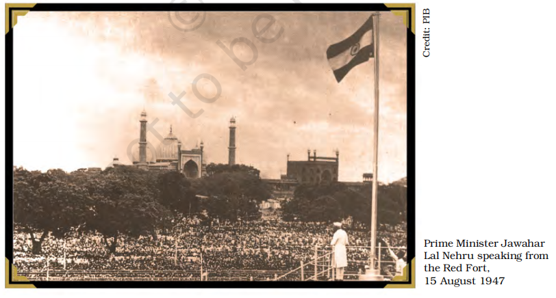
- At midnight on 14-15 August 1947, India attained independence, marking the end of British rule.
- Jawaharlal Nehru, the first Prime Minister, addressed a special session of the Constituent Assembly with his iconic 'Tryst with Destiny' speech.
- Shared Vision for the Nation
- The national movement had diverse voices, but two fundamental goals united all: establishing a democratic government and ensuring the upliftment of the poor and disadvantaged.
- With independence achieved, the time had come to fulfill these aspirations.
- Challenges of Independence
- India's birth came with immense hardships, arguably more severe than any other newly independent nation at the time.
- Partition led to unprecedented violence and mass displacement, creating a crisis in the newly formed country.
- Resilience Amidst Turmoil
- Despite the challenges, India's leaders remained steadfast in their commitment to nation-building.
- The struggle for independence was over, but the journey to realizing its promises had only begun.
- Challenges Before Independent India
- Nation-Building and Unity
- The foremost challenge was to create a unified nation while respecting India's vast diversity.
- India's continental size, multiple languages, cultures, and religions made national integration difficult.
- The partition of 1947 raised fears about India's ability to remain united.
- Questions arose about whether unity would come at the cost of regional and sub-national identities.
- A crucial task was integrating the princely states and ensuring territorial consolidation.
- Establishing Democracy
- India adopted a parliamentary democracy with universal suffrage and fundamental rights.
- A democratic constitution alone was not enough; the challenge was to instill democratic practices.
- Political competition had to be conducted within a democratic framework, ensuring representation and participation.
- Socio-Economic Development
- Development had to benefit the entire society, not just a privileged few.
- The Constitution guaranteed equality and protection for socially disadvantaged and minority groups.
- Directive Principles of State Policy outlined welfare goals, emphasizing economic growth and poverty eradication.
- The challenge lay in formulating and implementing effective policies to achieve these objectives.
- 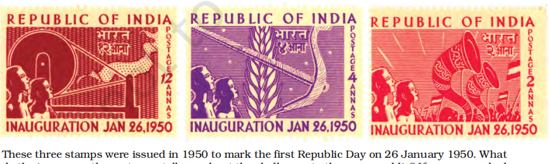
- Perspectives on Communal Harmony and Minority Rights
- Jinnah's Vision for Pakistan
- Mohammad Ali Jinnah, in his Presidential Address to the Constituent Assembly of Pakistan on 11 August 1947, emphasized unity beyond religious and communal divisions.
- He envisioned a Pakistan where religious identity would not interfere with state affairs.
- He urged people to move beyond distinctions such as Hindus and Muslims, further recognizing the internal diversity within these communities, including Pathans, Punjabis, Shias, Sunnis, Brahmins, Vaishnavas, and others.
- He asserted that all citizens were free to practice their religion without state interference.
- Nehru's Stand on Minority Rights in India
- In a letter to Chief Ministers on 15 October 1947, Jawaharlal Nehru addressed the need to ensure the security and rights of the Muslim minority in India.
- He acknowledged that due to their large numbers, Indian Muslims could not simply migrate elsewhere, making their protection a fundamental necessity.
- Despite provocations from Pakistan and the violence inflicted upon non-Muslims there, India had to uphold democratic and civilized values in treating its minorities.
- Nehru warned that failure to ensure their security and rights could lead to internal instability, ultimately threatening the unity and health of the nation.
- Partition: displacement and rehabilitation
- Creation of India and Pakistan
- Birth of Two Nations
- On 14-15 August 1947, two independent nation-states—India and Pakistan—came into existence.
- This was the result of partition, which divided British India into two separate countries.
- The territorial boundaries of each nation were determined through a drawn border, marking the culmination of prolonged political developments.
- The Two-Nation Theory and the Demand for Pakistan
- The Muslim League advanced the two-nation theory, asserting that India was home to not one but two distinct communities—Hindus and Muslims.
- Based on this theory, the League demanded the creation of Pakistan as a separate nation for Muslims.
- The Indian National Congress strongly opposed both the theory and the demand for partition.
- Political Developments Leading to Partition
- The 1940s saw a series of political developments that deepened the divide between the Congress and the Muslim League.
- Intense political competition between the two parties, combined with the strategic role played by the British, ultimately led to the decision to create Pakistan.
- Challenges of Partition
- Decision to Divide India
- The partition of British India resulted in the creation of two separate nations—India and Pakistan.
- The division followed the principle of religious majorities, meaning areas where Muslims were in the majority would become Pakistan, while the rest would remain part of India.
- Though the idea seemed straightforward, its execution proved to be extremely complex and painful.
- Geographical Challenges
- Muslim-majority areas in British India were not contiguous; instead, they were concentrated in two distinct regions—one in the west and another in the east.
- Since these two regions could not be connected, Pakistan was formed as two separate territories—West Pakistan and East Pakistan—separated by a vast expanse of Indian land.
- Opposition to Partition
- Not all Muslim-majority areas supported the idea of Pakistan.
- Khan Abdul Gaffar Khan, the leader of the North-Western Frontier Province (Frontier Gandhi), strongly opposed the two-nation theory.
- Despite his resistance, NWFP was merged with Pakistan, disregarding the wishes of its leadership.
- Division of Punjab and Bengal
- Punjab and Bengal, though Muslim-majority provinces, had significant non-Muslim populations in certain regions.
- To address this, both provinces were divided based on religious majorities at the district level or even lower.
- However, this decision was not finalized by 14-15 August, leaving many people uncertain about whether they belonged to India or Pakistan.
- The partition of these two provinces caused immense suffering, with large-scale violence and displacement.
- The Minority Crisis
- The most severe and unpredictable problem of partition was the plight of religious minorities on both sides of the border.
- Lakhs of Hindus and Sikhs in the newly created Pakistan, and an equal number of Muslims in Indian Punjab, Bengal, and Delhi, found themselves alienated in their own homeland.
- As soon as partition became imminent, minorities became targets of communal violence, escalating beyond control.
- No concrete plans were in place to manage the crisis, and people were forced to flee their homes within hours, leaving behind everything they owned.
- Impact of Partition
- Mass Migration and Violence
- 1947 witnessed one of history's largest and most abrupt unplanned population transfers.
- Widespread killings and atrocities occurred on both sides in the name of religion.
- Cities like Lahore, Amritsar, and Kolkata became divided into 'communal zones'.
- Hindus, Sikhs, and Muslims avoided areas dominated by other communities.
- 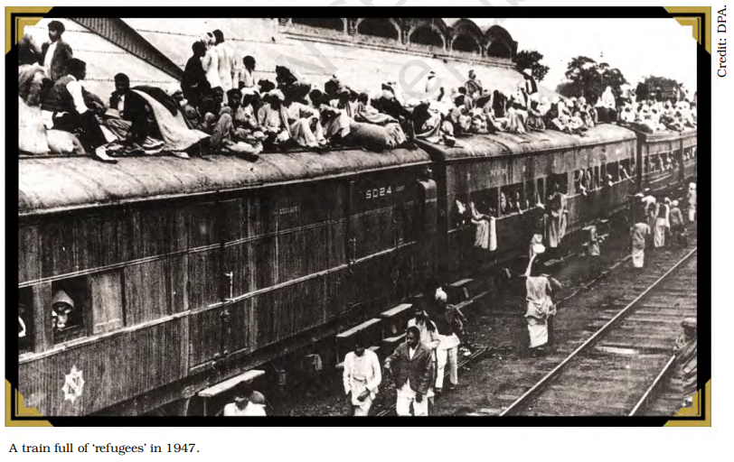
- Displacement and Suffering
- Minorities were forced to flee their homes and seek shelter in refugee camps.
- The local administration and police often failed to provide protection.
- People migrated by foot, trains, or any available means, facing attacks along the way.
- Thousands of women were abducted, forcibly converted, and married off.
- Many families killed their own women to protect 'family honour'.
- Children were separated from their parents; many refugees remained homeless for years.
- Cultural Reflection of Partition
- Writers, poets, and filmmakers in India and Pakistan captured the trauma of Partition.
- Survivors often described it as a 'division of hearts'.
- Division Beyond Land
- Partition was not just about territorial separation; it also divided financial assets and resources.
- Government and railway employees were split between the two nations.
- Even minor items like typewriters, paper-clips, and police band instruments were divided.
- Above all, it violently separated communities that had once lived together as neighbors.
- Around 80 lakh people migrated, and 5 to 10 lakh were killed in Partition-related violence.
- Religious and Political Challenges
- Despite Partition, India's leaders rejected the two-nation theory.
- By 1951, Muslims still formed 12% of India's population.
- The challenge was to ensure equal treatment of all religious communities.
- The Muslim League had advocated for Pakistan, while Hindu nationalist groups pushed for a Hindu nation.
- However, most leaders of the national movement insisted on secularism and equal rights for all.
- This principle was later enshrined in the Indian Constitution, ensuring that citizenship was not based on religion.
- 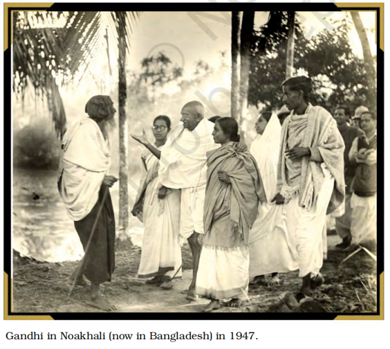
- Additional side information
- Hospitality Delayed – Saadat Hasan Manto
- Rioters stopped a moving train and attacked passengers of the other community with swords and bullets.
- The remaining passengers were treated to halwa, fruits, and milk.
- The chief organizer apologized, saying:
- “Brothers and sisters, news of this train's arrival was delayed. That is why we have not been able to entertain you lavishly – the way we wanted.”
- Source: English translation of the Urdu short story Kasre-Nafsi.
- Mahatma Gandhi's Sacrifice
- Gandhi's Role During Partition Violence
- 15 August 1947: Gandhi did not participate in any Independence Day celebrations.
- He was in Kolkata, amidst Hindu-Muslim riots.
- Saddened that ahimsa (non-violence) and satyagraha had failed to unite people.
- Persuaded Hindus and Muslims to stop violence.
- His presence improved the situation, leading to communal harmony and celebrations.
- However, riots soon erupted again, forcing Gandhi to fast for peace.
- Gandhi's Efforts in Delhi
- Moved to Delhi in September 1947, where large-scale violence had erupted.
- Fought to ensure Muslims could stay in India with dignity as equal citizens.
- Concerned about India's relations with Pakistan.
- Opposed India's decision to not honour its financial commitments to Pakistan.
- Undertook his final fast in January 1948, which:
- Reduced communal violence in Delhi.
- Ensured Muslims could return safely to their homes.
- Led to India agreeing to pay Pakistan its dues.
- Assassination of Gandhi
- Extremists opposed Gandhi's vision:
- Hindu extremists wanted revenge or sought a Hindu-only India.
- Accused Gandhi of favouring Muslims and Pakistan.
- Gandhi believed India as a Hindu nation would destroy the country.
- Multiple assassination attempts were made, but Gandhi refused armed protection.
- 30 January 1948: Nathuram Godse shot Gandhi during his evening prayer in Delhi.
- Aftermath of Gandhi's Death:
- Communal violence reduced drastically.
- Government cracked down on hate-spreading organizations.
- Rashtriya Swayamsevak Sangh (RSS) was banned for some time.
- Communal politics lost its appeal.
- Integration of Princely States
- 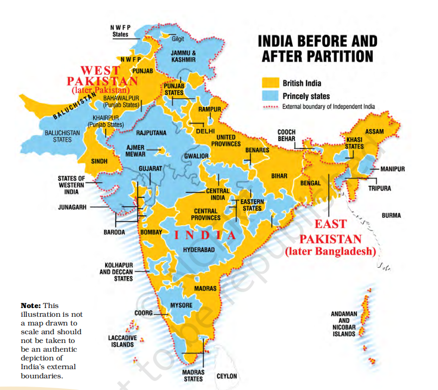
- Division of British India
- British Indian Provinces
- Directly controlled by the British government.
- Princely States
- Ruled by Indian princes but under British supremacy.
- Had some control over internal affairs, provided they accepted British rule.
- This system was called paramountcy or suzerainty of the British Crown.
- Extent:
- Covered one-third of British India's land area.
- One in four Indians lived under princely rule.
- Princely States and the Challenge of Integration
- End of British Paramountcy
- Before Independence, the British announced that paramountcy over Princely States would lapse with the end of their rule.
- This meant that 565 princely states would become legally independent.
- The British government allowed them to join India, Pakistan, or remain independent.
- The decision was left to the rulers, not the people, posing a threat to India's unity.
- Immediate Challenges
- Some rulers declared independence, leading to concerns about India's fragmentation:
- Travancore announced its decision to remain independent.
- Hyderabad's Nizam made a similar declaration the next day.
- Bhopal's Nawab opposed joining the Indian Constituent Assembly.
- If princely states remained independent, India faced the risk of further division into smaller nations.
- Conflict with Democratic Principles
- Indian Independence was aimed at unity, self-determination, and democracy.
- However, many princely states were ruled non-democratically, and their rulers were unwilling to grant democratic rights to their people.
- This created a paradox, as Independence was meant to bring democracy, yet many princely rulers resisted it.
- Integration of Princely States into India
- Firm Stance Against Fragmentation
- The interim government opposed the division of India into multiple princely states.
- The Muslim League argued that princely states should be free to choose their future.
- Sardar Patel, as Deputy Prime Minister and Home Minister, played a key role in persuading rulers to join India through firm yet diplomatic negotiations.
- The task was complex—Orissa had 26 small states, while Saurashtra (Gujarat) had 14 big states, 119 small states, and various administrations.
- Government's Approach to Integration
- The integration strategy was based on three key considerations:
1. People's Will – Most people in princely states wanted to be part of India.
2. Flexibility – The government was willing to grant autonomy to some regions to accommodate their diversity.
3. National Unity – After Partition, it was crucial to consolidate India's territorial boundaries to prevent further division.
- Process of Accession
- By 15 August 1947, peaceful negotiations had led most princely states contiguous to India to join the Union.
- Rulers signed the Instrument of Accession, officially making their states part of India.
- However, some states posed greater challenges, including:
- Junagadh – Resolved through a plebiscite, confirming the people's desire to join India.
- Hyderabad and Manipur – These required additional efforts, which are discussed further.
- The Kashmir issue, a significant challenge, is covered in Chapter Eight.
- Additional information
- Sardar Patel's Call for Unity and His Role in Nation-Building
- Call for Cooperation (1947)
“We are at a momentous stage in the history of India. By common endeavour, we can raise the country to new greatness, while lack of unity will expose us to unexpected calamities. I hope the Indian States will realise fully that if we do not cooperate and work together in the general interest, anarchy and chaos will overwhelm us all, great and small, and lead us to total ruin…”
— Sardar Patel's Letter to Princely Rulers, 1947
- Sardar Vallabhbhai Patel (1875–1950)
- Freedom Fighter – A key leader in India's freedom movement.
- Congress Leader – A senior figure in the Indian National Congress and close associate of Mahatma Gandhi.
- Architect of Integration – As Deputy Prime Minister and India's first Home Minister, he played a crucial role in the unification of Princely States with India.
- Constitutional Contributions – Served on key Constituent Assembly committees, including:
- Fundamental Rights
- Minorities
- Provincial Constitution
- Integration of Hyderabad into India
- Hyderabad: The Largest Princely State
- Geographical Location: Entirely surrounded by Indian territory, with parts of the former Hyderabad State now in Maharashtra, Karnataka, and Andhra Pradesh.
- Ruler: The Nizam of Hyderabad, one of the world's richest men, sought independent status for his state.
- Standstill Agreement (November 1947): A one-year agreement with India to maintain the status quo while negotiations were ongoing.
- People's Movement Against the Nizam
- A mass uprising emerged, particularly among the peasantry in Telangana, who suffered under the Nizam's oppressive rule.
- Women played a significant role in the movement, having endured the worst of the oppression.
- Hyderabad city became the centre of the movement, led by:
- The Communists
- The Hyderabad Congress
- The Nizam's Response: The Razakars
- The Nizam unleashed a para-military force called the Razakars, known for their brutality and communal violence.
- The Razakars committed massacres, rapes, and looting, primarily targeting non-Muslims.
- India's Military Action and Hyderabad's Accession
- Due to escalating violence, the Indian government ordered military intervention.
- In September 1948, the Indian Army launched “Operation Polo” to restore order.
- After a few days of fighting, the Nizam surrendered, leading to Hyderabad's integration into India.
- Integration of Manipur into India
- Signing of the Instrument of Accession
- Just before Independence, Maharaja Bodhachandra Singh of Manipur signed the Instrument of Accession with the Indian government.
- Assurance: The Indian government assured that Manipur's internal autonomy would be maintained.
- First Elections in Manipur (June 1948)
- Under public pressure, the Maharaja held elections, making Manipur a constitutional monarchy.
- Significance: Manipur became the first region in India to conduct elections based on universal adult franchise.
- Debate Over Merger with India
- Sharp divisions arose in the Manipur Legislative Assembly on whether to merge with India:
- The state Congress supported the merger.
- Other political parties opposed it.
- Forced Merger with India (September 1949)
- The Government of India pressured the Maharaja into signing the Merger Agreement, bypassing the elected Legislative Assembly.
- Impact: This unilateral decision led to anger and resentment in Manipur, with long-term repercussions still felt today.
- Reorganization of States: The Linguistic Basis
- 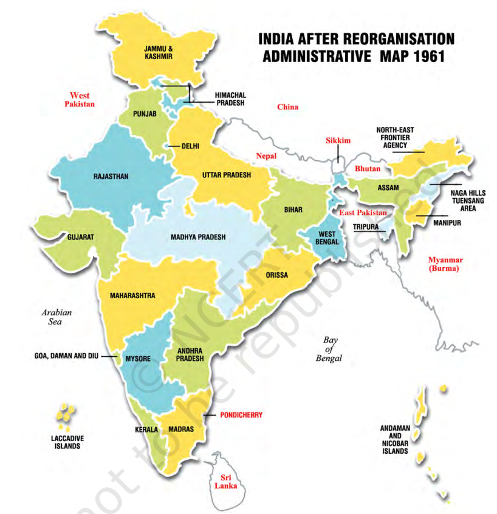
- Nation-Building Beyond Partition and Princely Integration
- The task of nation-building did not end with Partition and the integration of Princely States.
- A new challenge emerged: drawing internal state boundaries in a way that reflected India's linguistic and cultural plurality while preserving national unity.
- Colonial Boundaries vs. National Movement's Vision
- During British rule, states were divided based on:
- Administrative convenience
- Territories annexed by the British government
- Existing princely state boundaries
- The national movement rejected these divisions as artificial and promised linguistic reorganization of states.
- The Nagpur session of Congress (1920) recognized language as the basis for reorganizing Provincial Congress Committees, independent of British-era divisions.
- Post-Independence Hesitation and the Vishalandhra Movement
- After Independence and Partition, national leaders feared that linguistic states might:
- Cause disruption and disintegration
- Divert attention from social and economic challenges
- Thus, the reorganization of states was postponed, especially as the fate of Princely States remained unresolved.
- This delay led to public protests, particularly in Telugu-speaking regions of the Madras Province (which included parts of Tamil Nadu, Andhra Pradesh, Kerala, and Karnataka).
- The Vishalandhra Movement demanded the creation of a separate Andhra state.
- Nearly all political forces in Andhra supported linguistic reorganization.
- Potti Sriramulu's Sacrifice and the Creation of Andhra
- Due to the government's indecision, the movement intensified.
- Potti Sriramulu, a Congress leader and Gandhian, began an indefinite fast.
- After 56 days, he died, triggering:
- Mass protests and violent demonstrations
- Police firing, causing casualties
- Resignations of legislators in Madras
- Outcome: The Prime Minister announced the formation of Andhra state in December 1952.
- Expansion of the Linguistic Reorganization Movement
- The success of Andhra's formation inspired similar demands across India.
- Facing rising public pressure, the Central Government appointed the States Reorganisation Commission (1953) to examine state boundary restructuring.
- The Commission's report affirmed that state boundaries should reflect linguistic divisions.
- Based on this, the States Reorganisation Act (1956) was passed, leading to:
- The creation of 14 states and 6 union territories.
- Addressing Fears of National Disintegration
- Initially, leaders feared that linguistic states might:
- Encourage separatism
- Weaken national unity
- However, under popular pressure, the leadership chose linguistic reorganization, believing that:
- Recognizing regional identities would reduce separatist tendencies.
- It would promote democracy by allowing greater local representation.
- The Impact of Linguistic Reorganization
- Over 50 years later, linguistic states have strengthened Indian democracy in key ways:
- Opened political power to people beyond the English-speaking elite.
- Provided a uniform basis for defining state boundaries.
- Contrary to fears, it did not lead to national disintegration but strengthened unity.
- Diversity and Democracy in India
- The formation of linguistic states reinforced the principle of diversity within democracy.
- India's democracy was not just about:
- A constitutional framework
- Regular elections
- It also meant accepting and accommodating differences, even when oppositional.
- Indian politics, moving forward, would operate within this pluralistic framework.
- Additional side information
- Potti Sriramulu (1901-1952): A Key Figure in Linguistic Reorganization
- A dedicated Gandhian worker, he left his government job to participate in the Salt Satyagraha.
- Actively involved in the Individual Satyagraha movement.
- In 1946, he undertook a fast demanding that temples in the Madras province be opened to Dalits.
- On 19 October 1952, he began a fast unto death demanding a separate Andhra state.
- He passed away on 15 December 1952 during the fast, leading to the formation of Andhra Pradesh.
- Reorganization of States: Linguistic and Regional Factors
- Linguistic Reorganization and Initial Challenges
- The acceptance of linguistic states did not immediately apply to all regions.
- Some states were initially bilingual, leading to later agitation and separation.
- Formation of Maharashtra and Gujarat (1960)
- The Bombay state was a bilingual experiment, consisting of Gujarati- and Marathi-speaking people.
- Due to popular agitation, Bombay was split, leading to the formation of:
- Maharashtra (Marathi-speaking)
- Gujarat (Gujarati-speaking)
- Punjab Reorganization (1966)
- Punjab had two major linguistic groups:
- Hindi-speaking
- Punjabi-speaking
- The Punjabi-speaking population demanded a separate state, but it was not granted in 1956.
- After a decade of demands, Punjab was reorganized in 1966, resulting in the creation of:
- Punjab (Punjabi-speaking)
- Haryana (Hindi-speaking)
- Himachal Pradesh (separate state)
- North-East Reorganization (1963-1987)
- Major reorganization in the North-East took place over multiple phases:
- Nagaland became a state in 1963.
- In 1972, the following states were created:
- Meghalaya (carved out of Assam)
- Manipur
- Tripura
- In 1987, two more states emerged:
- Mizoram
- Arunachal Pradesh
- Beyond Language: New Criteria for State Formation
- Over time, language was not the only factor for creating new states.
- Sub-regions began demanding separate states based on:
- Distinct regional culture
- Economic and developmental disparities
- In 2000, three new states were formed:
- Chhattisgarh (from Madhya Pradesh)
- Uttarakhand (from Uttar Pradesh)
- Jharkhand (from Bihar)
- Continuing Demands for Smaller States
- The reorganization process is ongoing, with demands for new states in various regions, including:
- Vidarbha (Maharashtra)
- Harit Pradesh (Western Uttar Pradesh)
- Gorkhaland (Northern West Bengal)
- Mahatma Gandhi on Linguistic Provinces (January 1948):
“If linguistic provinces are formed, it will also give a boost to regional languages. It would be absurd to make Hindustani the medium of instruction in all regions, and even more absurd to use English for this purpose.”
- Era of one-party dominance
- India's First Steps in Democracy
- Challenges of Nation-Building
- Difficult Circumstances at Independence
- India faced serious challenges in nation-building after gaining independence.
- Many newly independent countries abandoned democracy, prioritizing national unity over political differences.
- Forms of non-democratic rule in other countries included:
- One-party rule
- Military regimes
- Autocratic leaders promising but never restoring democracy
- India's Decision to Choose Democracy
- Despite similar challenges, India's leaders chose democracy instead of authoritarianism.
- The freedom struggle was deeply committed to democracy, making it a natural choice.
- Politics was seen as a solution, not a problem, for governing a diverse society.
- The First General Elections (1951-52)
- Setting Up the Electoral Process
- The Constitution was adopted on 26 November 1949, came into effect on 26 January 1950.
- India was ruled by an interim government until democratic elections could be held.
- The Election Commission of India was established in January 1950.
- Sukumar Sen was appointed as the first Chief Election Commissioner.
- Challenges in Conducting Elections
- Logistical Issues
- Holding a free and fair election in a vast country was a huge challenge.
- Two key tasks:
- Delimitation of constituencies – defining electoral boundaries
- Preparing electoral rolls – listing eligible voters
- A major issue: 40 lakh women were listed incorrectly as “wife of…” or “daughter of…”.
- The Election Commission ordered corrections or deletions.
- Scale and Complexity
- 17 crore eligible voters had to elect:
- 3,200 MLAs (State Assemblies)
- 489 Lok Sabha members
- Only 15% of voters were literate, requiring a special voting system.
- Over 3 lakh officers were trained to manage polling and counting.
- Skepticism About Democracy in India
- Doubts and Criticism
- Many doubted India's ability to hold democratic elections:
- An Indian editor called it “the biggest gamble in history.”
- Organiser magazine predicted Nehru would admit failure.
- A British bureaucrat dismissed it as “an absurd farce.”
- Election Process and Global Impact
- Conducting the Elections
- Elections were postponed twice, finally held from October 1951 – February 1952.
- The process took six months to complete.
- Elections were highly competitive – with an average of 4+ candidates per seat.
- Over 50% of eligible voters participated, a significant achievement.
- Proving the Critics Wrong
- Elections were free and fair, even accepted by losing parties.
- The Times of India said the elections “confounded skeptics.”
- The Hindustan Times praised the Indian people's commitment to democracy.
- International observers recognized India's democratic success.
- India's Democracy as a Global Example
- India's success proved democracy was possible even in a poor, largely illiterate country.
- It inspired other nations to adopt democratic governance.
- Additional side information
- Quote by Dr. B.R. Ambedkar on Hero-Worship in Politics
“In India, hero-worship plays a part in its politics unequalled in magnitude by the part it plays in the politics of any other country. But in politics, hero-worship is a sure road to degradation and eventual dictatorship.”
— Dr. B.R. Ambedkar, Speech in the Constituent Assembly, 25 November 1949
- Evolution of Voting Methods in India
- First General Election: Ballot Box System
- Initially, voting was conducted using separate ballot boxes for each candidate.
- Each polling booth had a box for every candidate, displaying their election symbol.
- Voters were given a blank ballot paper, which they dropped into the box of their chosen candidate.
- Around 20 lakh steel ballot boxes were used.
- Preparation of Ballot Boxes
- A presiding officer from Punjab described the process:
- Each box had to display:
- The candidate's symbol (inside and outside).
- The candidate's name in Urdu, Hindi, and Punjabi.
- Constituency number, polling station, and polling booth details.
- A paper seal with the numerical details of the candidate, signed by the presiding officer, was inserted.
- To fix symbols and labels, the boxes were rubbed with sandpaper or a brick.
- The entire preparation took about five hours for six people, including the officer's two daughters.
- Transition to Stamped Ballots (After Two Elections)
- The ballot paper now carried names and symbols of all candidates.
- Voters had to put a stamp on the candidate they wanted to vote for.
- This method remained in use for nearly forty years.
- Introduction of Electronic Voting Machines (EVMs)
- Late 1990s: The Election Commission began introducing Electronic Voting Machines (EVMs).
- By 2004: The entire country had transitioned to EVMs, replacing paper ballots.
- Maulana Abul Kalam Azad (1888-1958)
- Original Name: Abul Kalam Mohiyuddin Ahmed
- Noted As: Scholar of Islam, freedom fighter, and Congress leader
- Key Contributions:
- Strong proponent of Hindu-Muslim unity
- Opposed Partition of India
- Member of the Constituent Assembly
- Served as India's first Education Minister in the cabinet of independent India
- Congress dominance in the first three general elections
- 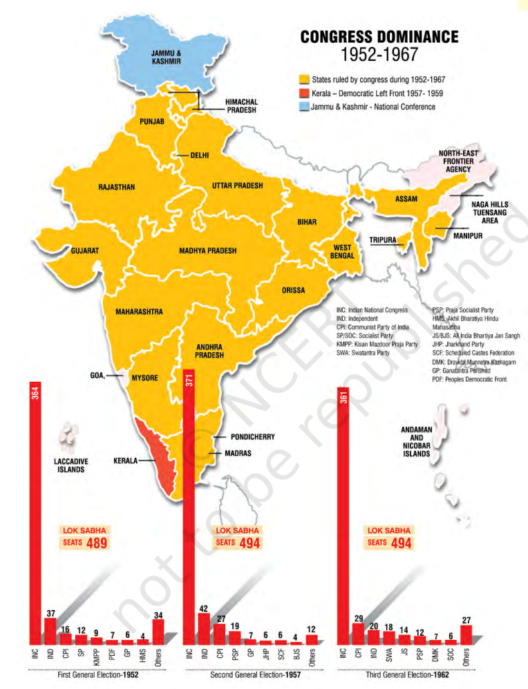
- Congress Victory in 1952
- The Indian National Congress was expected to win due to:
- Its legacy from the national movement
- Organisational presence across the country
- Charismatic leadership of Jawaharlal Nehru
- When the results were declared, the scale of victory surprised many:
- Congress won 364 out of 489 seats in the first Lok Sabha
- The Communist Party of India (CPI), the second-largest party, won only 16 seats
- In state elections, Congress won a majority in all states except Travancore-Cochin, Madras, and Orissa but eventually formed governments there as well
- Jawaharlal Nehru became India's first elected Prime Minister
- Congress Dominance (1952-1962)
- Congress maintained its dominance in the second (1957) and third (1962) general elections, securing nearly three-fourths of Lok Sabha seats
- Opposition parties failed to win even one-tenth of Congress' seats
- In state assembly elections, Congress generally held power except for notable exceptions like Kerala (1957), where a CPI-led coalition formed the government
- Impact of the Electoral System
- Congress' victory was amplified by the first-past-the-post system:
- 1952 election results:
- Congress secured 45% of total votes but won 74% of seats
- Socialist Party, with over 10% of votes, won less than 3% of seats
- The vote split among opposition parties benefited Congress, as non-Congress votes were divided
- This disproportionate representation helped Congress maintain its dominance throughout the decade
- Additional side information
- First Communist Government in Kerala (1957) and Its Dismissal (1959)
- Communist Party's Victory in Kerala (1957)
- In the March 1957 assembly elections, the Communist Party of India (CPI) won:
- 60 out of 126 seats in the Kerala legislature
- Support from five independent members
- Kerala's Governor invited E.M.S. Namboodiripad to form the ministry
- This marked the first time in the world that a Communist party came to power through democratic elections
- Congress' 'Liberation Struggle' and Dismissal of the CPI Government
- After losing power, the Congress party launched a 'liberation struggle' against the elected Communist government
- The CPI had promised radical and progressive reforms, but opponents claimed the agitation was led by vested interests and religious organisations
- In 1959, the Congress-led Central government dismissed the Communist government under Article 356 of the Constitution
- This move was widely criticized as the first misuse of constitutional emergency powers
- Aftermath
- The dismissal of the E.M.S. Namboodiripad government set a precedent for future political interventions by the Central government
- The Socialist Party: Origins, Ideology, and Evolution
- Origins of the Socialist Party
- The roots of the Socialist Party can be traced to the mass movement phase of the Indian National Congress before independence.
- In 1934, a group of young leaders within the Congress formed the Congress Socialist Party (CSP), advocating a more radical and egalitarian Congress.
- In 1948, the Congress amended its constitution to prohibit dual party membership, forcing the Socialists to form a separate Socialist Party in the same year.
- Despite having a presence in many states, the Socialist Party achieved electoral success only in a few regions, leading to disappointment among its supporters.
- Ideology and Challenges
- The Socialists followed democratic socialism, distinguishing them from both the Congress and the Communists.
- They criticized the Congress for favoring capitalists and landlords while ignoring workers and peasants.
- However, in 1955, when the Congress declared its goal as a 'socialist pattern of society', the Socialists found it difficult to present themselves as a distinct alternative.
- This led to internal divisions:
- Rammanohar Lohia took a stronger anti-Congress stance.
- Asoka Mehta advocated limited cooperation with the Congress.
- Splits and Evolution into New Parties
- The Socialist Party underwent several splits and reunions, leading to the formation of:
- Kisan Mazdoor Praja Party
- Praja Socialist Party
- Samyukta Socialist Party
- Prominent socialist leaders included Jayaprakash Narayan, Achyut Patwardhan, Asoka Mehta, Acharya Narendra Dev, Rammanohar Lohia, and S.M. Joshi.
- Several contemporary political parties in India, such as Samajwadi Party, Rashtriya Janata Dal, Janata Dal (United), and Janata Dal (Secular), trace their origins to the Socialist Party.
- Nature of Congress dominance
- One-Party Dominance: India vs. the World
- Global Instances of One-Party Dominance
- India is not the only country to have experienced one-party dominance.
- However, there is a crucial difference between India and other nations with similar dominance.
- In most other cases, one-party dominance was ensured by compromising democracy, whereas in India, it occurred under democratic conditions.
- Examples of non-democratic one-party rule:
- China, Cuba, Syria – Constitutionally allow only one party to rule.
- Myanmar, Belarus, Egypt, Eritrea – Effectively one-party states due to legal and military measures.
- Mexico, South Korea, Taiwan – Until a few years ago, these were also one-party dominant states.
- The Congress party's dominance in India was different—multiple parties contested free and fair elections, yet the Congress continued to win.
- A comparable example is South Africa, where the African National Congress (ANC) has enjoyed electoral dominance after the end of apartheid.
- Reasons Behind the Congress Party's Dominance
- The extraordinary success of the Congress party can be traced back to the legacy of the freedom struggle:
- Congress was seen as the inheritor of the national movement.
- Many prominent leaders from the freedom struggle contested elections as Congress candidates.
- Congress was already a well-organised party, unlike newly formed political parties that emerged only around Independence.
- The party had a 'first off the blocks' advantage—it had begun its political campaign before other parties could even develop a strategy.
- By the time of Independence, the Congress had a strong organisational network across the country, reaching the local level.
- Since the Congress had functioned as a national movement, it had an all-inclusive nature, appealing to various sections of society.
- All these factors contributed to the continued electoral dominance of the Congress party in India, setting it apart from other one-party dominant states worldwide.
- Additional side information
- Babasaheb Bhimrao Ramji Ambedkar (1891-1956)
- Leader of the anti-caste movement and advocate for Dalit justice.
- Scholar and intellectual who contributed significantly to social and political thought.
- Founder of political organizations:
- Independent Labour Party
- Scheduled Castes Federation
- Planned the formation of the Republican Party of India
- Political Roles:
- Member of Viceroy's Executive Council during World War II.
- Chairman of the Drafting Committee of the Constituent Assembly.
- Minister in Nehru's first cabinet after Independence.
- Resigned in 1951 due to differences over the Hindu Code Bill.
- Embraced Buddhism in 1956, along with thousands of followers.
- Evolution and Transformation of the Indian National Congress
- Origins and Early Development (1885 - 20th Century)
- Founded in 1885 as a pressure group for newly educated professionals and commercial classes.
- Evolved into a mass movement in the 20th century, eventually becoming a dominant political party.
- Social Expansion of Congress
- Initially dominated by English-speaking, upper-caste, upper-middle-class, and urban elites.
- With each civil disobedience movement, its social base widened, incorporating:
- Peasants and industrialists
- Urban dwellers and villagers
- Workers and owners
- Middle, lower, and upper classes
- Leadership expanded beyond upper-caste professionals to agriculture-based rural leaders.
- By Independence, Congress had become a broad social coalition, representing diverse castes, classes, religions, languages, and interests.
- Congress as an Ideological Coalition
- Functioned as a platform accommodating a wide range of ideologies:
- Revolutionary and pacifist
- Conservative and radical
- Extremist and moderate
- Right, left, and center
- Pre-Independence, several groups, organisations, and political parties coexisted within Congress while retaining their own constitution and structure.
- Internal Differences and the Emergence of Opposition
- Many groups merged their identity within Congress, while others continued to exist separately with different beliefs.
- Some factions, such as the Congress Socialist Party, eventually separated and became opposition parties.
- Despite differences in methods, programmes, and policies, Congress managed to contain and build a consensus within its broad framework.
- Additional side information
- Emergence and Evolution of the Communist Party of India (CPI)
- Origins and Early Influence (1920s - 1941)
- Communist groups emerged across India in the early 1920s, inspired by the Bolshevik Revolution in Russia.
- Advocated socialism as the solution to India's problems.
- From 1935, the Communists operated mainly within the Indian National Congress.
- In December 1941, they broke away from Congress after deciding to support the British in their war against Nazi Germany.
- Post-Independence Challenges and Shift in Strategy (1947 - 1951)
- After Independence, internal debates arose about whether Indian freedom was real or an illusion.
- The CPI initially viewed the transfer of power in 1947 as not true independence and encouraged violent uprisings in Telangana.
- However, failing to gain popular support, the movement was suppressed by the armed forces.
- In 1951, the CPI abandoned violent revolution and chose to participate in electoral politics.
- Electoral Success and Regional Influence
- In the first general election (1952), the CPI won 16 seats, becoming the largest opposition party.
- Strongholds included Andhra Pradesh, West Bengal, Bihar, and Kerala.
- Notable Leaders
- A.K. Gopalan (1904-1977)
- Communist leader from Kerala; initially worked as a Congress worker.
- Joined the Communist Party in 1939.
- After the 1964 split, joined the CPI(M) and contributed to strengthening the party.
- Respected as a parliamentarian; served as a Member of Parliament from 1952.
- S.A. Dange
- E.M.S. Namboodiripad
- P.C. Joshi
- Ajay Ghosh
- P. Sundarraya
- The 1964 Split: CPI and CPI(M)
- In 1964, the CPI split due to an ideological divide between the Soviet Union and China.
- The pro-Soviet faction remained as the CPI, while the pro-China faction formed the CPI(M).
- Both parties continue to exist today.
- The Coalition-like Character of Congress
- The Congress functioned like a coalition, which provided it with unusual strength:
- Balancing Ideologies:
- A coalition accommodates all groups, avoiding extreme positions.
- It maintains a balance on key issues through compromise and inclusiveness.
- As a result, opposition parties struggled, since their views were often already included in the Congress's agenda.
- Tolerance of Internal Differences:
- A coalition-type party tolerates internal conflicts and accommodates ambitions of various groups and leaders.
- Congress successfully did this during the freedom struggle and after Independence.
- Even when dissatisfied, factions preferred to stay within the party and fight for influence rather than form a separate opposition.
- Role of Factions in Congress:
- Congress encouraged factions, which were often based on ideology, personal ambitions, or rivalries.
- This factionalism strengthened Congress, as leaders with diverse interests remained within the party rather than forming new parties.
- Congress as a 'Grand Centrist Party':
- Most state units of Congress had multiple factions, taking varied ideological positions.
- Other political parties influenced these factions rather than challenging the Congress directly.
- These factions acted as an internal balancing mechanism, making Congress both the ruling party and the opposition.
- Thus, political competition occurred within the Congress itself, making it the dominant force in early Indian politics. This is why the first decade of electoral competition in India is often described as the 'Congress system'.
- Additional side information
- Bharatiya Jana Sangh (1951)
- Founded by Shyama Prasad Mukherjee, with its lineage tracing back to the Rashtriya Swayamsevak Sangh (RSS) and the Hindu Mahasabha before Independence.
- Ideology and Programmes
- Emphasized “one country, one culture, one nation”, believing that India's progress lay in its culture and traditions.
- Advocated for the reunion of India and Pakistan into Akhand Bharat.
- Led agitation for Hindi as the official language, opposing English.
- Opposed concessions to religious and cultural minorities.
- Consistently advocated for India to develop nuclear weapons, especially after China's atomic tests in 1964.
- Electoral Performance and Support Base
- Remained on the margins in the 1950s, winning only 3 Lok Sabha seats in 1952 and 4 seats in 1957.
- Drew support mainly from urban areas in Hindi-speaking states like Rajasthan, Madhya Pradesh, Delhi, and Uttar Pradesh.
- Key Leaders
- Shyama Prasad Mukherjee
- Deen Dayal Upadhyaya (1916-1968)
- Full-time RSS worker since 1942.
- Founder member of the Bharatiya Jana Sangh.
- Served as General Secretary and later President of the Bharatiya Jana Sangh.
- Initiated the concept of Integral Humanism.
- Balraj Madhok
- The Bharatiya Janata Party (BJP) traces its roots to the Bharatiya Jana Sangh.
- Opposition Parties in Early Indian Democracy
- 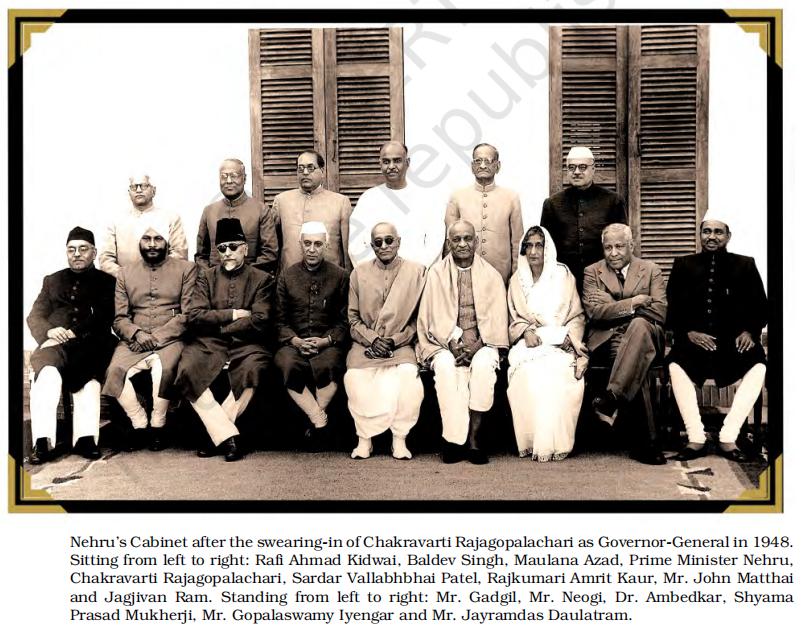
- Presence of Opposition Parties
- India had a larger number of diverse and vibrant opposition parties than many other multi-party democracies.
- Some opposition parties existed even before the first general election of 1952.
- These parties gained importance in the 1960s and 1970s.
- The roots of most present-day non-Congress parties trace back to the opposition parties of the 1950s.
- Role of Opposition Parties
- Despite securing only token representation in the Lok Sabha and state assemblies, these parties played a crucial role in:
- Maintaining the democratic character of the system.
- Offering principled criticism of Congress policies, keeping the ruling party in check.
- Shaping the balance of power within the Congress.
- Preventing political resentment from turning anti-democratic.
- Grooming future political leaders.
- Mutual Respect in Early Politics
- In the initial years, Congress and opposition leaders shared mutual respect:
- The interim government included opposition leaders like Dr. B.R. Ambedkar and Shyama Prasad Mukherjee.
- Jawaharlal Nehru admired the Socialist Party and invited Jayaprakash Narayan to join his government.
- However, as party competition grew intense, this personal respect declined.
- Congress as a Broad-Based Coalition
- The Congress functioned like a coalition, drawing strength from:
- The inclusive nature of the national movement, which attracted diverse social and ideological groups.
- Its leading role in the freedom struggle, giving it a strong advantage over other parties.
- Over time, as Congress struggled to accommodate all political interests, other parties gained significance.
- Evolution of Indian Politics
- Congress dominance was only one phase in Indian politics.
- Later phases saw the emergence of stronger opposition parties and changing power dynamics.
- Additional side information
- Swatantra Party (1959)
- Formation and Leadership
- The Swatantra Party was formed in August 1959 in response to the Nagpur resolution of the Congress, which proposed:
- Land ceilings
- State control over food grain trade
- Cooperative farming
- The party was led by prominent former Congressmen, including:
- C. Rajagopalachari
- K.M. Munshi
- N.G. Ranga
- Minoo Masani
- Ideology and Economic Stance
- The party strongly opposed state intervention in the economy and promoted individual freedom as the key to prosperity.
- It was critical of:
- Centralized economic planning
- Nationalization and the public sector
- Land ceilings in agriculture
- Cooperative farming and state trading
- The progressive tax regime and the licensing system
- It instead favored:
- Expansion of the free private sector
- Reduction of government control over the economy
- Foreign Policy
- The party was opposed to non-alignment and friendly ties with the Soviet Union.
- It advocated for closer relations with the United States.
- Support Base and Challenges
- The Swatantra Party gained strength through mergers with regional parties and interest groups.
- It attracted:
- Landlords and princes seeking to protect their land and status from land reform policies.
- Industrialists and business elites opposed to nationalization and licensing policies.
- However, the party faced organizational weaknesses due to:
- A narrow social base
- A lack of dedicated cadre for strong grassroots mobilization
- Shyama Prasad Mukherjee (1901-1953)
- Political Affiliations:
- Leader of Hindu Mahasabha
- Founder of Bharatiya Jana Sangh
- Role in Independent India:
- Served as a Minister in Nehru's first cabinet after Independence
- Resigned in 1950 due to differences over relations with Pakistan
- Legislative Contributions:
- Member of the Constituent Assembly
- Later, served in the first Lok Sabha
- Stand on Jammu & Kashmir:
- Strongly opposed India's policy of autonomy to Jammu & Kashmir
- Led Jana Sangh's agitation against Kashmir policy
- Arrested during the agitation and died in detention
- Politics of planned development
- Iron Ore and Steel Industry in Orissa
- Growing Demand and Investment
- With the global demand for steel increasing, Orissa, which holds one of the largest untapped iron ore reserves in India, is emerging as a key investment destination.
- To capitalize on this demand, the State government has signed Memorandums of Understanding (MoUs) with both international and domestic steel manufacturers.
- The government believes these investments will:
- Bring in capital investment
- Create employment opportunities
- Concerns and Challenges
- Tribal Communities:
- Iron ore reserves are located in some of the most underdeveloped and tribal-dominated districts.
- Fear of displacement due to industrial projects threatens their homes and livelihoods.
- Environmentalists:
- Concerned that large-scale mining and industrialization could lead to pollution and environmental degradation.
- Central Government's Perspective:
- Fears that restricting industrial development may discourage future investments and set a negative precedent for the country's economy.
- Economic Development and Political Decision-Making
- Complexity of Development Decisions
- Some decisions cannot be answered by experts alone, as they require balancing competing interests, such as:
- One social group vs. another
- Present vs. future generations
- In a democracy, major decisions should be:
- Taken or approved by the people
- Made with input from experts in mining, environment, and economics
- Ultimately decided politically by elected representatives who understand public sentiment
- Post-Independence Economic Vision
- After Independence, India had to make a series of major economic decisions, all of which were interconnected.
- A shared vision of development guided these choices, emphasizing:
- Economic growth
- Social and economic justice
- There was broad agreement that:
- Development should not be left entirely to businessmen, industrialists, or farmers
- The government should play a key role
- However, debates arose on how the government should intervene, including:
- Should there be a centralized planning institution for the whole country?
- Should the government directly control key industries and businesses?
- How should justice and economic growth be balanced when they conflict?
- Political and Historical Significance
- These questions sparked political debates that continue today.
- Every decision had political consequences, requiring:
- Consultation among political parties
- Public approval
- This is why economic development must be studied as part of India's political history.
- Additional side information
- What is Left and what is Right?
- Meaning of Left and Right Ideologies
- In most countries, political groups and parties are often categorized as Left or Right based on their stance on:
- Social change
- The role of the state in economic redistribution
- Left-wing ideology:
- Supports the poor and marginalized sections of society
- Advocates for government intervention to promote social welfare and economic equality
- Right-wing ideology:
- Believes in free competition and market economy as the key drivers of progress
- Opposes excessive government intervention in economic affairs
- Political Landscape of the 1960s
- The 1960s saw a clear division between Leftist and Rightist parties in India.
- Left parties: Advocated for social justice and state intervention in the economy
- Right parties: Favored market-driven growth and minimal government control
- The Congress Party during that time had elements of both Left and Right, making it a centrist force in Indian politics.
- The Debate on Development
- Different Perspectives on Development
- The idea of development is contested and means different things to different people.
- Example of Orissa:
- An industrialist sees development as setting up a steel plant.
- An urban consumer views it as access to cheap steel.
- An Adivasi in the region fears displacement and loss of livelihood.
- This contradiction leads to conflicts and debates over what development should mean.
- The Western Influence on Development
- In the first decade after Independence, development was often measured against the West.
- The Western model of development was linked to:
- Modernisation – moving away from traditional structures.
- Capitalism and liberalism – economic growth through free markets.
- Material progress and scientific rationality – focus on industrialization.
- This approach led to the classification of countries as developed, developing, or underdeveloped.
- India's Choice: Capitalism vs. Socialism
- At the time of Independence, India had two development models to consider:
- Liberal-capitalist model (Europe & the US).
- Socialist model (USSR).
- Many Indian leaders were impressed by the Soviet model, including:
- Leaders of the Communist Party of India.
- Socialist Party members.
- Even Jawaharlal Nehru within the Congress.
- Support for American-style capitalism was minimal.
- Consensus and Debate in India
- A broad agreement emerged during the national movement that:
- Free India's economic concerns would differ from the colonial government's commercial focus.
- The government would take primary responsibility for poverty alleviation and economic redistribution.
- However, there were differences in priorities:
- Some favored industrialization as the key to development.
- Others prioritized agriculture and rural poverty alleviation.
- The Consensus on Planning
- 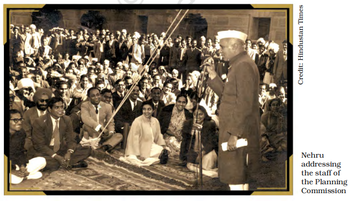
- Need for Government-Led Development
- Despite differences, there was agreement that development could not be left entirely to private actors.
- The government needed to design a structured plan for economic development.
- The idea of planning for economic rebuilding gained global support in the 1940s and 1950s due to:
- Great Depression and its impact on Europe.
- Post-war reconstruction in Japan and Germany.
- Soviet Union's rapid economic growth in the 1930s and 1940s, despite challenges.
- The Origins of the Planning Commission
- Planning was not a sudden invention but had historical roots.
- Contrary to popular belief, big industrialists were not always against planning.
- In 1944, a group of major industrialists drafted a proposal for a planned economy known as the Bombay Plan.
- The Bombay Plan suggested state-led investment in industries and economic sectors.
- This showed that support for planning existed across the ideological spectrum, from left to right.
- Formation of the Planning Commission
- After Independence, the Planning Commission was established to shape India's economic strategy.
- The Prime Minister served as its Chairperson.
- It became the most powerful institution for deciding India's development path and policies.
- Additional side information
- Replacement of the Planning Commission (Niti Ayog)
- On 1 January 2015, the Government of India replaced the Planning Commission with a new institution called NITI Aayog (National Institution for Transforming India).
- NITI Aayog was established to redefine India's development strategy and promote cooperative federalism.
- Establishment and Role of the Planning Commission
- The Planning Commission was not a constitutional body, which is why there was no reference to it in the book Constitution at Work.
- It was established in March 1950 by a simple resolution of the Government of India, not by the Constitution.
- The Commission had an advisory role, and its recommendations became effective only after approval by the Union Cabinet.
- Scope of Work (as defined in the resolution)
- The resolution setting up the Planning Commission linked its objectives to the Directive Principles of State Policy, emphasizing:
- Promotion of Welfare – Securing and protecting a social order based on justice (social, economic, and political).
- Right to Livelihood – Ensuring that all citizens, men and women equally, have access to an adequate means of livelihood.
- Equitable Distribution of Resources – Ensuring that ownership and control of material resources serve the common good.
- Preventing Wealth Concentration – Ensuring that the economic system does not lead to the concentration of wealth and means of production to the common detriment.
- The Early Initiatives
- 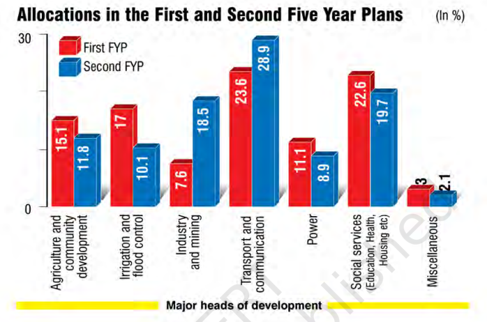
- Five-Year Plans in India
- Inspired by the USSR model, the Planning Commission of India adopted the concept of Five-Year Plans (FYPs).
- The Government of India prepared a document outlining its income and expenditure plan for the next five years.
- Accordingly, budgets at both the central and state levels were divided into:
- Non-plan budget – Annual expenses on routine items.
- Plan budget – Expenditure aligned with long-term development priorities set in the FYP.
- Excitement Around Early Five-Year Plans
- The First Five-Year Plan (1951) generated widespread discussions and debates across all sections of society—academics, journalists, government officials, private sector employees, industrialists, farmers, and politicians.
- The enthusiasm peaked with the launch of the Second Five-Year Plan (1956) and continued through the Third Five-Year Plan (1961).
- Decline and Plan Holiday
- The Fourth Five-Year Plan, originally due in 1966, was delayed due to economic crises and a decline in enthusiasm for planning.
- The government declared a 'Plan Holiday', marking a shift in focus.
- Despite criticisms over the process and priorities of these plans, they laid the foundation for India's economic development.
- The First Five-Year Plan (1951–1956)
- The primary objective of the First Five-Year Plan was to break the cycle of poverty in India.
- K.N. Raj, a young economist involved in drafting the plan, advised a gradual approach—stating that rapid development might threaten democracy.
- Focus on Agriculture and Land Reforms
- The agrarian sector was given top priority, especially in response to the devastation caused by Partition.
- Large-scale investments were made in dams and irrigation, including projects like the Bhakra Nangal Dam.
- The Plan identified unequal land distribution as a major hindrance to agricultural growth and emphasized land reforms as a crucial step toward development.
- Encouraging National Savings
- One of the key aims was to increase national income, which required higher savings rates.
- Since spending levels in the 1950s were already very low, the focus was on pushing savings up.
- However, due to low capital stock relative to the population, the expected rise in savings did not materialize as anticipated.
- Although savings increased moderately until the end of the Third Five-Year Plan, the early 1960s to early 1970s saw a consistent decline in savings rates.
- The Second Five-Year Plan (1956–1961)
- The Second FYP focused on heavy industries and was drafted under the leadership of P.C. Mahalanobis.
- Unlike the First Plan, which emphasized patience, the Second Plan aimed for rapid structural transformation, implementing changes in multiple sectors simultaneously.
- Shift Towards a Socialist Economy
- Before finalizing the plan, the Congress session at Avadi (near Madras) passed a resolution declaring the goal of establishing a “socialist pattern of society.”
- This vision was reflected in the Second Plan, which imposed high tariffs on imports to protect domestic industries.
- The public sector took the lead in industries like electricity, railways, steel, machinery, and communication, while private sector industries also grew in a protected environment.
- The increase in savings and investment facilitated this industrial expansion, marking a turning point in India's economic development.
- Challenges and Criticism
- Technological dependency: India lacked advanced technology and had to spend valuable foreign exchange to import it.
- Neglect of agriculture: As industrialization received more investment than agriculture, concerns over food shortages emerged.
- Balancing industry and agriculture proved to be a major challenge for planners.
- The Third Five-Year Plan largely followed the same industrial approach, but critics pointed out:
- An “urban bias” in planning.
- Overemphasis on heavy industries at the cost of agriculture.
- Some suggested a focus on agriculture-related industries rather than large-scale industrial projects.
- Additional side information
- The Kerala Model of Development
- Decentralized Planning:
- Planning does not always have to be centralized or focused only on big industries and large projects.
- The Kerala Model represents an alternative approach, emphasizing social development over industrial expansion.
- Key Focus Areas:
- Education and healthcare
- Land reforms and poverty alleviation
- Effective food distribution
- Achievements Despite Economic Constraints:
- Despite low per capita incomes and a weak industrial base, Kerala achieved:
- Near-total literacy
- Long life expectancy
- Low infant and female mortality rates
- Low birth rates
- High access to medical care
- People's Participation in Development:
- Between 1987 and 1991, the government introduced the New Democratic Initiative, which:
- Launched development campaigns focusing on total literacy, especially in science and environmental awareness.
- Encouraged direct involvement of citizens through voluntary organizations.
- Kerala also pioneered grassroots planning, involving people in decision-making at the Panchayat, block, and district levels.
- Key Controversies
- Debate: Agriculture vs. Industry in Development Planning
- Key Question:
- Should agriculture or industry receive more public resources in a backward economy like India's?
- Criticism of the Second Plan:
- Lacked a strong agrarian strategy.
- Emphasis on industrial growth led to the neglect of agriculture and rural India.
- Alternative Agrarian Perspective:
- J.C. Kumarappa (Gandhian Economist):
- Proposed a model emphasizing rural industrialization.
- Chaudhary Charan Singh (Bharatiya Lok Dal Founder):
- Advocated for prioritizing agriculture in planning.
- Argued that planning favored urban and industrial prosperity at the expense of farmers and rural areas.
- Pro-Industry Argument:
- Industrial growth was essential to breaking the cycle of poverty.
- Indian planning did include agrarian strategies:
- Land reforms and resource distribution among the poor.
- Community development programs.
- Large-scale irrigation projects.
- Cause of Failure:
- Poor implementation due to the power of landowning classes.
- Simply increasing agricultural investment would not have solved rural poverty.
- India's Development Model: A Mixed Economy (Public vs Private)
- Unique Path:
- India did not fully adopt the capitalist model (where the private sector dominates) or the socialist model (where the state controls all production).
- Instead, it combined elements of both, creating a mixed economy.
- Key Features of the Mixed Economy:
- Private Sector: Controlled much of agriculture, trade, and industry.
- State Control:
- Managed key heavy industries.
- Provided industrial infrastructure.
- Regulated trade.
- Made strategic interventions in agriculture.
- Criticism from Both Sides
- Right-Wing Criticism (Pro-Capitalist View):
- Planners restricted private sector growth by imposing excessive controls.
- Licensing and permits created bureaucratic hurdles for investment.
- Import restrictions led to lack of competition, discouraging product improvement and cost reduction.
- Inefficiency and corruption grew due to excessive state control.
- Left-Wing Criticism (Pro-Socialist View):
- The state did not invest enough in public education and healthcare.
- Government intervention mainly supported areas where the private sector saw no profit, benefiting businesses instead of the poor.
- Created a privileged middle class with high salaries but little accountability.
- Poverty did not decline significantly—even when the proportion of poor people reduced, their absolute numbers kept rising.
- Major Outcomes
- Challenges in Achieving Development Goals
- Unequal Development
- Land reforms were ineffective in most parts of the country.
- Political power remained with the landowning classes.
- Big industrialists thrived, while poverty reduction was minimal.
- Political Consequences
- Initial planning aimed at economic growth and well-being.
- Lack of significant progress led to political challenges.
- Beneficiaries of unequal development gained political power, making reforms harder.
- Laying the Foundations for Economic Growth
- Major Development Projects
- Mega-dams for irrigation and power (e.g., Bhakhra-Nangal, Hirakud).
- Establishment of heavy industries (e.g., steel plants, oil refineries, defense production).
- Significant improvements in transport and communication infrastructure.
- Long-Term Impact
- Later economic growth, including private sector expansion, benefited from these foundations.
- Some projects faced criticism, but their role in India's industrialization remains crucial.
- Land Reforms: Successes & Failures
- Successes
- Abolition of Zamindari System
- Released land from uninterested landlords.
- Reduced landlords' political dominance.
- Land Consolidation
- Small fragmented landholdings were merged for better agricultural viability.
- Failures
- Land Ceiling Laws
- Intended to limit land ownership but were widely evaded.
- Tenant Rights
- Legal protections against eviction were rarely enforced.
- Challenges in Implementation
- Power of Landowners
- Rural elites resisted reforms and influenced policies.
- Political Reality
- Economic policies were shaped by dominant social groups, limiting effective implementation.
- The Green Revolution: A Shift in Agricultural Strategy
- Background: Food Crisis and External Pressure
- India was vulnerable to food shortages and relied heavily on food aid, mainly from the United States.
- The U.S. pressured India to alter its economic policies to ensure food self-sufficiency.
- Policy Shift: Focus on High-Potential Areas
- Instead of supporting lagging farmers and regions, the government prioritized areas with existing irrigation and wealthy farmers.
- Objective: Rapid production increase in the short term.
- Key Measures of the Green Revolution
- Subsidized Inputs: High-yield seeds, fertilizers, pesticides, and irrigation support at subsidized rates.
- Price Assurance: Government guaranteed purchase of agricultural produce at fixed prices.
- Outcomes of the Green Revolution
- Agricultural Growth
- Led to moderate agricultural growth, primarily in wheat production.
- Increased overall food availability in India.
- Social and Regional Disparities
- Beneficiaries: Rich peasants and large landowners gained the most.
- Regional Divide: Prosperity in Punjab, Haryana, and Western Uttar Pradesh, while other regions remained underdeveloped.
- Class Divide: Widened economic gap between landlords and poor peasants.
- Political and Social Impact
- Rise of Left-Wing Movements: Economic disparity led to mobilization of poor peasants by left-wing organizations.
- Emergence of Middle Peasants: Medium-sized landowners benefited significantly, gaining political influence.
- Additional side information
- Agricultural Crisis of the 1960s
- Worsening Agricultural Situation
- Food grain production in the 1940s and 1950s barely kept pace with population growth.
- Between 1965 and 1967, severe droughts struck many parts of India.
- This period also saw wars and a foreign exchange crisis, exacerbating food shortages.
- Many regions experienced famine-like conditions.
- Bihar's Severe Food Crisis
- Bihar faced the worst of the crisis, nearing a famine situation.
- Food production dropped drastically:
- 9 districts produced less than half their normal output.
- 5 districts produced less than one-third of their usual yield.
- Acute malnutrition became widespread:
- Calorie intake fell from 2200 per capita per day to as low as 1200 (against a required 2450).
- The death rate in Bihar in 1967 was 34% higher than the following year.
- Economic and Social Impact
- Food prices in Bihar soared, significantly higher than in Punjab:
- Wheat and rice prices were at least twice as high as in more prosperous states.
- Government “zoning” policies restricted inter-state food trade, worsening Bihar's food availability.
- The poorest sections of society suffered the most.
- Consequences of the Crisis
- The government had to import wheat and rely on foreign aid, mainly from the US.
- The priority of economic planning shifted to achieving food self-sufficiency.
- The crisis undermined the optimism and confidence in the country's planning process.
- Amul and the White Revolution
- Amul: A Cooperative Success Story
- The famous “Utterly Butterly Delicious” jingle and the iconic Amul girl are part of India's advertising legacy.
- Behind Amul's success is the cooperative dairy farming movement in India.
- Verghese Kurien, known as the Milkman of India, played a pivotal role in the growth of Gujarat Cooperative Milk and Marketing Federation Ltd (GCMMF), which launched Amul.
- Based in Anand, Gujarat, Amul is a dairy cooperative movement with around 2.5 million milk producers.
- The Amul model became a blueprint for rural development and poverty alleviation, leading to what is known as the White Revolution.
- Operation Flood: Transforming India's Dairy Industry
- Launched in 1970, Operation Flood was a rural development programme aimed at:
- Organizing milk cooperatives into a nationwide milk grid.
- Increasing milk production.
- Bringing producers and consumers closer by eliminating middlemen.
- Ensuring farmers received a stable income throughout the year.
- Operation Flood was more than just a dairy initiative; it was a tool for rural employment, income generation, and poverty alleviation.
- Over time, cooperative membership grew significantly, with women members and Women's Dairy Cooperative Societies increasing in number.
- Shifting Economic Policies in India (Post-1960s)
- Indira Gandhi's Economic Approach
- After Nehru's death, the Congress system faced challenges, as discussed in Chapter Five.
- Indira Gandhi emerged as a strong leader, reinforcing the state's role in economic control.
- Key policies from 1967 onward:
- Increased state intervention in the economy.
- Fourteen private banks nationalized.
- Introduction of pro-poor programs.
- A significant ideological shift towards socialism, leading to heated debates among political parties and experts.
- Decline of State-Led Economic Development
- The state-controlled model did not retain its dominance indefinitely.
- While planning continued, its significance diminished over time.
- Between 1950 and 1980, the Indian economy grew at a slow rate of 3-3.5% per annum.
- Issues that led to declining trust in state-led development:
- Inefficiency and corruption in public sector enterprises.
- Bureaucratic inefficiencies that hindered economic growth.
- Erosion of public faith in government institutions.
- By the 1980s, policymakers reduced the state's role in the economy, marking the beginning of a shift towards economic liberalization, which is discussed later in the book.
- India's external relations
- India's Foreign Policy in a Changing World
- Global Context at the Time of India's Independence
- India gained independence in a challenging international environment:
- The world was recovering from the devastation of the Second World War.
- A new international body (United Nations) was being established.
- The collapse of colonialism led to the emergence of new nations.
- These newly independent states faced the dual challenges of democracy and development.
- India's foreign policy in the early years reflected these global concerns.
- Domestic Challenges Shaping Foreign Policy
- Apart from global factors, India had its own challenges:
- Legacy of international disputes left by British rule.
- Pressures from Partition and its aftermath.
- Poverty alleviation as an urgent national goal.
- Given this backdrop, India entered world affairs as an independent nation-state with a focus on peace and sovereignty.
- Guiding Principles of India's Foreign Policy
- India aimed to conduct its foreign relations based on:
- Respect for the sovereignty of all nations.
- Achieving security through peace.
- These principles are reflected in the Directive Principles of State Policy.
- Developing Nations and Global Power Struggles
- Like individuals and families, nations are influenced by both domestic and international factors.
- Developing nations, with limited resources, tend to:
- Pursue modest foreign policy goals compared to powerful states.
- Prioritize peace and development in their regions.
- Rely on powerful countries for economic and security assistance, which sometimes influences their policies.
- Post-World War II, the world was divided into two camps:
- One led by the United States and its Western allies.
- The other led by the Soviet Union.
- Many developing nations aligned with one of these powers due to economic aid or political pressure.
- India's Stance in the Cold War Era
- As the Cold War intensified, the world became bipolar.
- India, however, chose a different path—it did not join either bloc.
- This led to the formation of the Non-Aligned Movement (NAM), which played a crucial role in India's foreign policy.
- But was India truly non-aligned in the global politics of the 1950s and 1960s?
- Additional side information
- Nehru on the Essence of Independence
“What does independence consist of? It consists fundamentally and basically of foreign relations. That is the test of independence. All else is local autonomy. Once foreign relations go out of your hands into the charge of somebody else, to that extent and in that measure you are not independent.”
— Jawaharlal Nehru, during a debate in the Constituent Assembly, March 1949.
- Directive Principles on International Peace and Security
- Article 51 of the Indian Constitution outlines the Directive Principles of State Policy regarding the promotion of international peace and security. It states that the State shall endeavour to:
- (a) Promote international peace and security.
- (b) Maintain just and honourable relations between nations.
- (c) Foster respect for international law and treaty obligations in dealings among organised people.
- (d) Encourage the settlement of international disputes through arbitration.
- The Policy of non-alignment
- India's National Movement and Its Influence on Foreign Policy
- The Indian national movement was part of the global struggle against colonialism and imperialism, influencing liberation movements in Asia and Africa.
- Before India's independence, nationalist leaders had contacts with those of other colonies, united in their fight against colonial rule.
- The Indian National Army (INA), formed by Netaji Subhash Chandra Bose during World War II, was a clear example of India's connection with overseas Indians in the struggle for freedom.
- Interplay of Domestic and External Factors in Foreign Policy
- A nation's foreign policy is shaped by both domestic and international factors.
- The ideals that guided India's freedom struggle played a role in shaping its foreign policy.
- However, India's independence coincided with the beginning of the Cold War, a period of political, economic, and military confrontation between the US and USSR.
- Other major global developments at the time included:
- The establishment of the UN.
- The creation of nuclear weapons.
- The rise of Communist China.
- The beginning of decolonisation.
- India's leaders had to navigate national interests within this complex global environment.
- Nehru's Role in Shaping India's Foreign Policy
- Jawaharlal Nehru, India's first Prime Minister, played a pivotal role in setting the national agenda.
- As both Prime Minister and Foreign Minister, he had a profound influence on India's foreign policy from 1946 to 1964.
- Objectives of Nehru's Foreign Policy
- Nehru's three key goals were:
- Preserving India's sovereignty after independence.
- Protecting territorial integrity from external threats.
- Promoting rapid economic development.
- Nonalignment as a Strategy
- To achieve these objectives, Nehru championed nonalignment, ensuring India remained independent from Cold War blocs.
- However, some parties and leaders advocated a pro-US stance:
- Dr. B.R. Ambedkar and some groups favored closer ties with the US-led bloc, citing its pro-democracy stance.
- Anti-communist parties, including the Bharatiya Jan Sangh and later the Swatantra Party, also pushed for a pro-US foreign policy.
- Despite these differing views, Nehru had considerable freedom in shaping India's foreign policy.
- Additional side information
- Jawaharlal Nehru on India's Foreign Policy Approach
- In a letter to K.P.S. Menon in January 1947, Jawaharlal Nehru outlined India's stance on global power politics:
“Our general policy is to avoid entanglement in power politics and not to join any group of powers as against any other group. The two leading groups today are the Russian bloc and the Anglo-American bloc. We must be friendly to both and yet not join either. Both America and Russia are extraordinarily suspicious of each other as well as of other countries. This makes our path difficult and we may well be suspected by each of leaning towards the other. This cannot be helped.”
- This statement reflects Nehru's commitment to nonalignment, ensuring India remained independent in international affairs while maintaining friendly relations with both global superpowers.
- India's Foreign Policy During the Cold War
- Independent India pursued the vision of a peaceful world through non-alignment, reducing Cold War tensions, and contributing to UN peacekeeping operations.
- Non-Alignment and Cold War Blocs
- During the Cold War, the world was divided between the US-led NATO and the Soviet-led Warsaw Pact. India chose not to align with either military alliance, advocating non-alignment as the ideal foreign policy.
- This stance required careful balancing, which at times appeared inconsistent.
- In 1956, India led the global protest against Britain's neo-colonial invasion of Egypt over the Suez Canal.
- However, in the same year, India did not publicly condemn the Soviet invasion of Hungary.
- Despite such complexities, India largely maintained an independent stance on international issues, allowing it to receive aid and assistance from both superpowers.
- Relations with the US and Pakistan
- While India promoted non-alignment among developing nations, Pakistan joined the US-led military alliances, creating tensions in Indo-US relations.
- The US was uneasy about India's independent foreign policy and growing ties with the Soviet Union.
- India's strategy of planned economic development focused on import substitution, which limited its economic interaction with the world.
- The US resented India's approach, further straining Indo-US relations during the 1950s.
- Despite challenges, India's foreign policy remained independent, shaping its role on the global stage.
- India's Role in Global and Asian Affairs Under Nehru
- Given India's size, location, and potential power, Jawaharlal Nehru envisioned a major role for the country in world affairs, particularly in Asian affairs.
- His leadership fostered strong ties with newly independent Asian and African nations during the 1940s and 1950s.
- Advocacy for Asian Unity and Decolonization
- Nehru was a strong advocate of Asian unity.
- Under his leadership, India convened the Asian Relations Conference in March 1947, even before achieving independence.
- India actively supported Indonesia's independence from Dutch colonial rule, convening an international conference in 1949 to aid its struggle.
- India was a staunch supporter of decolonization and firmly opposed racism, particularly apartheid in South Africa.
- The Bandung Conference and the Birth of NAM
- The Afro-Asian Conference in Bandung, Indonesia, in 1955 marked the peak of India's engagement with newly independent nations.
- The Bandung Conference eventually led to the establishment of the Non-Aligned Movement (NAM).
- The First NAM Summit was held in Belgrade in September 1961, with Nehru as one of its co-founders (See Chapter 1 of Contemporary World Politics).
- Through these efforts, India positioned itself as a key voice for newly independent nations and played a pivotal role in shaping the post-colonial global order.
- Peace and conflict with China
- 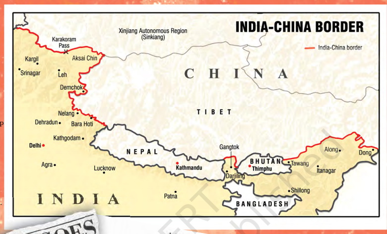
- India's Early Relationship with China
- Unlike its strained ties with Pakistan, independent India's relations with China began on a friendly note.
- Early Diplomatic Recognition and Support
- After the Chinese Revolution in 1949, India was one of the first countries to recognize the communist government.
- Jawaharlal Nehru strongly supported China's emergence from Western domination and assisted its global recognition in international forums.
- However, some Indian leaders, like Vallabhbhai Patel, were concerned about potential Chinese aggression in the future.
- Nehru dismissed these fears, believing it was “exceedingly unlikely” that China would attack India.
- For a long time, India's border with China was guarded only by para-military forces, not the army.
- The Panchsheel Agreement
- On April 29, 1954, Nehru and Chinese Premier Zhou Enlai jointly announced the Five Principles of Peaceful Coexistence, known as Panchsheel.
- This marked a significant step towards strengthening India-China relations.
- Leaders from both nations exchanged visits, receiving warm and enthusiastic welcomes from the public.
- These early interactions set the foundation for India-China relations, which initially appeared cooperative and amicable.
- Additional side information
- Tibet
- China established the Tibet Autonomous Region, asserting it as an integral part of its territory. However, Tibetans strongly oppose this claim, disputing both China's authority over Tibet and the extent of autonomy granted to the region.
- Their concerns include:
- The influx of Chinese settlers, which they believe is aimed at altering Tibet's demographic composition.
- Fears that China seeks to undermine Tibet's traditional religion and culture.
- Tibetans continue to challenge China's policies, arguing that true autonomy has not been granted.
- The Chinese Invasion of 1962
- The relationship between India and China deteriorated due to two key developments:
1. Annexation of Tibet (1950)
- By annexing Tibet, China removed a historical buffer between the two countries. Initially, India did not openly oppose this move.
- However, growing reports of Tibetan cultural suppression made the Indian government uneasy. When the Dalai Lama sought asylum in India in 1959, China accused India of supporting anti-China activities.
2. Boundary Dispute
- A border dispute emerged between the two nations, with India claiming that the boundary was settled during colonial rule, while China rejected these colonial-era agreements. The main points of contention were:
- Aksai Chin (Ladakh region, J&K) – Occupied by China between 1957 and 1959, where it built a strategic road.
- Arunachal Pradesh (formerly NEFA) – China claimed this territory as its own.
- Border skirmishes between Indian and Chinese forces followed, but diplomatic efforts failed to resolve the dispute.
- The 1962 War
- In October 1962, while global attention was focused on the Cuban Missile Crisis, China launched a swift and large-scale invasion into both disputed regions.
- First Attack (October 1962) – Lasted one week; Chinese forces captured key areas in Arunachal Pradesh.
- Second Attack (November 1962) – In Ladakh, Indian forces held their ground, but in the east, Chinese troops advanced close to the Assam plains.
- Ceasefire & Withdrawal – China unilaterally declared a ceasefire and withdrew its forces to pre-war positions.
- Impact of the 1962 War
- Military & Strategic Consequences
- India had to seek military assistance from the US and Britain.
- The Soviet Union remained neutral.
- Domestic Fallout
- The war damaged India's global image, causing a sense of national humiliation.
- However, it also strengthened nationalist sentiments.
- Political Consequences
- Several top army commanders resigned or were removed.
- Defence Minister V. Krishna Menon was forced to leave the cabinet.
- Nehru's reputation suffered due to his misjudgment of Chinese intentions and lack of military preparedness.
- A no-confidence motion was debated against Nehru's government in the Lok Sabha for the first time.
- The Congress Party lost key by-elections, signaling a shift in the political mood of the country.
- Impact on the Opposition
- The war deepened divisions within the Communist Party of India (CPI).
- A growing rift between China and the Soviet Union led to a split in 1964:
- The pro-USSR faction remained in CPI and aligned with the Congress.
- The pro-China faction opposed Congress ties and later formed the Communist Party of India (Marxist) (CPI-M).
- Many CPI-M leaders were arrested for their pro-China stance.
- Impact on India's Northeast
- The war exposed vulnerabilities in the Northeast region, which was:
- Isolated and underdeveloped.
- Facing challenges of national integration and political unity.
- The government reorganized the region:
- Nagaland was granted statehood.
- Manipur and Tripura (then Union Territories) were given legislative assemblies.
- Post-War Sino-Indian Relations
- It took over a decade for relations to normalize.
- 1976: Full diplomatic relations were restored.
- 1979: Atal Bihari Vajpayee (then External Affairs Minister) became the first top-level Indian leader to visit China.
- 1988: Rajiv Gandhi became the first Prime Minister after Nehru to visit China.
- Since then, the focus has shifted towards trade relations.
- Wars and Peace with Pakistan
- Early Conflict and Kashmir Dispute
- The India-Pakistan conflict began immediately after Partition over Kashmir.
- A proxy war broke out between Indian and Pakistani armies in 1947, but it did not escalate into a full-scale war.
- The dispute was later referred to the United Nations (UN).
- Over time, Pakistan became a key factor in India's foreign relations with both the US and China.
- Cooperation Despite Conflict
- The Kashmir conflict did not entirely prevent Indo-Pak cooperation:
- Both governments worked together to restore abducted women from Partition.
- A long-term dispute over river water sharing was resolved through World Bank mediation.
- In 1960, the Indus Waters Treaty was signed between Nehru and General Ayub Khan.
- Despite tensions, the treaty continues to function effectively.
- The 1965 War
- A major armed conflict erupted in 1965, during Lal Bahadur Shastri's tenure as Prime Minister.
- April 1965: Pakistan launched attacks in the Rann of Kutch (Gujarat).
- August-September 1965: Pakistan launched a larger offensive in Jammu and Kashmir, expecting local support—which did not materialize.
- Indian Counterattack:
- To ease pressure on Kashmir, Shastri ordered an Indian counter-offensive on the Punjab border.
- Indian forces advanced close to Lahore in fierce battles.
- End of the War & Tashkent Agreement
- The war ended following UN intervention.
- In January 1966, Lal Bahadur Shastri and General Ayub Khan signed the Tashkent Agreement, brokered by the Soviet Union.
- While India inflicted significant military losses on Pakistan, the war added to India's economic challenges.
- Bangladesh War, 1971
- Background and Causes
- In 1970, Pakistan faced its biggest internal crisis following its first general election.
- The results led to a split verdict:
- Zulfikar Ali Bhutto's party won in West Pakistan.
- Sheikh Mujib-ur Rahman's Awami League won overwhelmingly in East Pakistan.
- The Bengali population of East Pakistan had voted to protest decades of discrimination by West Pakistan's rulers.
- The Pakistani leadership refused to accept:
- The democratic mandate.
- The Awami League's demand for a federal structure.
- Repression and Liberation Struggle
- In early 1971, the Pakistani army arrested Sheikh Mujib and launched a brutal crackdown in East Pakistan.
- In response, the Bengali population began a struggle to liberate Bangladesh.
- India faced a massive refugee crisis, with 80 lakh refugees from East Pakistan seeking shelter.
- India provided moral and material support to the Bangladesh liberation movement.
- Geopolitical Dynamics and Indo-Soviet Treaty
- Pakistan accused India of attempting to break up the country.
- US and China supported Pakistan, forming a US-Pakistan-China axis.
- In July 1971, Henry Kissinger (US National Security Adviser) made a secret visit to China via Pakistan, signaling a new power realignment.
- To counterbalance this alliance, India signed a 20-year Treaty of Peace and Friendship with the Soviet Union in August 1971.
- The treaty ensured Soviet support in case of an attack on India.
- The 1971 War and Bangladesh's Liberation
- After months of tension and military build-up, a full-scale war broke out in December 1971.
- Pakistani forces attacked Punjab, Rajasthan, and Jammu & Kashmir.
- India launched a coordinated counter-offensive:
- The Army, Air Force, and Navy attacked on both Western and Eastern fronts.
- In East Pakistan, Indian forces were welcomed by the local population and made rapid progress.
- Within ten days, Indian forces surrounded Dhaka from three sides.
- The Pakistani army (90,000 troops) surrendered, marking the creation of Bangladesh as an independent nation.
- India then declared a unilateral ceasefire.
- Shimla Agreement and Aftermath
- On 3 July 1972, Indira Gandhi and Zulfikar Ali Bhutto signed the Shimla Agreement, formalizing peace.
- The war was a decisive victory for India, leading to national jubilation and enhanced military prestige.
- Indira Gandhi's popularity surged, strengthening her leadership.
- In post-war assembly elections, Congress won massive majorities in many states.
- Economic Impact and Defence Modernisation
- India had limited resources and was implementing development planning.
- However, conflicts with neighbors derailed the Five-Year Plans, leading to:
- Increased defence spending after 1962 and 1971.
- Creation of the Department of Defence Production (Nov 1962) and Department of Defence Supplies (Nov 1965).
- Disruption of the Third Five-Year Plan (1961-66), replaced by three Annual Plans before the Fourth Plan began in 1969.
- Defence expenditure surged, impacting India's economic planning.
- Kargil Conflict, 1999
- Background and Causes
- In early 1999, Pakistani soldiers and militants infiltrated the Indian side of the LoC in Mashkoh, Dras, Kaksar, and Batalik.
- The objective was to sever Ladakh's link with Kashmir and pressure India on Kashmir.
- Pakistan claimed the infiltrators were Mujahideen, but India suspected direct Pakistani Army involvement under General Pervez Musharraf.
- The Conflict
- India launched “Operation Vijay” to reclaim lost territory.
- Indian Air Force conducted “Operation Safed Sagar”, deploying MiG-27, MiG-29, and Mirage 2000 jets.
- Fierce battles occurred in high-altitude terrain (above 16,000 feet).
- By 26 July 1999, India successfully recaptured most positions (Kargil Vijay Diwas is observed on this day).
- International Reactions
- The war gained global attention as both India and Pakistan had become nuclear powers in 1998.
- U.S. and global pressure forced Pakistan to withdraw.
- Nawaz Sharif sought U.S. mediation, but India refused negotiations.
- Consequences
- In India:
- The conflict boosted Vajpayee's government's popularity.
- Led to military reforms and improved border surveillance.
- In Pakistan:
- Nawaz Sharif was overthrown by General Musharraf in October 1999.
- The war damaged Pakistan's global credibility.
- India's Nuclear Journey: 1974 and Beyond
- Early Nuclear Program and the 1974 Test
- India's nuclear program began in the late 1940s under the leadership of Homi J. Bhabha, with the goal of using atomic energy for peaceful purposes.
- Jawaharlal Nehru strongly advocated for scientific and technological advancement and nuclear disarmament.
- However, as global nuclear arsenals expanded, India viewed nuclear capability as a strategic necessity.
- China's nuclear test in 1964 heightened security concerns for India.
- In May 1974, India conducted its first nuclear test, termed a “peaceful nuclear explosion”, asserting its commitment to non-military nuclear use.
- Global and Domestic Context
- The test took place during a difficult domestic period.
- The Arab-Israel War of 1973 led to the Oil Shock, causing economic turmoil and inflation in India.
- The period also saw major agitations, including a nationwide railway strike.
- Despite internal challenges, nuclear policy remained a matter of national consensus, with broad agreement across political parties on national security and sovereignty.
- Opposition to Non-Proliferation Treaties
- The Nuclear Non-Proliferation Treaty (NPT) of 1968 was seen as discriminatory, as it preserved the monopoly of five nuclear powers (US, USSR, UK, France, and China).
- India refused to sign the NPT and later opposed its indefinite extension in 1995.
- India also rejected the Comprehensive Test Ban Treaty (CTBT), citing similar concerns.
- Nuclear Tests of 1998 and Global Response
- In May 1998, India conducted a series of nuclear tests, demonstrating its ability to use nuclear energy for military purposes.
- Pakistan followed with its own nuclear tests, escalating regional tensions.
- The international community condemned the tests, and sanctions were imposed on both India and Pakistan, though they were later waived.
- India's Nuclear Doctrine
- India's nuclear policy is based on credible minimum deterrence.
- It adheres to a “No First Use” policy, meaning India will not initiate a nuclear attack but will retaliate if attacked.
- India continues to advocate for global, verifiable, and non-discriminatory nuclear disarmament, aiming for a nuclear weapons-free world.
- India's Foreign Policy: Post-1977 Developments
- Shift in Foreign Policy Post-1977
- After 1977, several non-Congress governments came to power, marking a period of significant changes in both domestic and global politics.
- The Janata Party government (1977) declared its commitment to genuine non-alignment, aiming to correct the pro-Soviet tilt in India's foreign policy.
- Since then, all governments—Congress and non-Congress—have worked towards better relations with China and closer ties with the US.
- Key Factors Influencing India's Foreign Policy
- Indo-Pak Relations
- India's foreign policy is often evaluated based on its relationship with Pakistan, especially concerning Kashmir.
- Indo-US Relations
- Post-1990, governments have been criticized for their pro-US stance, reflecting a shift in strategic priorities.
- Russia's Declining Role
- While Russia remains an important ally, its global influence has waned, pushing India toward a more US-aligned strategy.
- Economic Over Military Priorities
- Economic interests have become the dominant factor in shaping international relations, impacting India's foreign policy decisions.
- Indo-Pak Relations: Developments and Challenges
- Efforts to restore normal relations between India and Pakistan have included cultural exchanges, citizen movement, and economic cooperation.
- Initiatives like the bus and train services between the two countries have been major diplomatic achievements.
- However, tensions persist—most notably the near-war situation in 1999 (Kargil conflict).
- Despite setbacks, both nations continue to engage in dialogue and peace negotiations to establish a stable relationship.
- Challenges to and restoration of the congress system
- Challenge of Political Succession
- After Nehru: The Questions of Succession
- Prime Minister Jawaharlal Nehru passed away in May 1964 after being unwell for more than a year.
- His prolonged illness sparked widespread speculation about the inevitable question of succession: After Nehru, who?
- However, in a newly independent country like India, this situation gave rise to a more pressing question: After Nehru, what?
- Concerns About India's Democratic Experiment
- The second question stemmed from the doubts raised by many outsiders regarding the survival of India's democratic experiment after Nehru's death.
- It was feared that, like many other newly independent countries, India might not be able to manage a democratic succession.
- A failure to do so could potentially pave the way for a political role for the army.
- There were also concerns about whether the new leadership would be able to address the multiple crises facing the country.
- The 1960s were dubbed the “dangerous decade”, as unresolved issues such as poverty, inequality, and communal and regional divisions posed serious threats.
- These unresolved challenges raised fears that they could lead to the failure of India's democratic project or even its disintegration.
- From Nehru to Shastri
- Succession After Nehru: The Smooth Transition
- The ease with which the succession after Nehru took place proved the critics wrong.
- When Nehru passed away, K. Kamraj, the president of the Congress party, consulted with party leaders and Congress members of Parliament.
- A consensus emerged in favour of Lal Bahadur Shastri, and he was unanimously chosen as the leader of the Congress Parliamentary Party.
- As a result, Shastri became the next Prime Minister of India.
- Lal Bahadur Shastri: The Non-Controversial Leader
- Lal Bahadur Shastri (1904-1966)
- Prime Minister of India
- Active participant in the freedom movement since 1930
- Served as a minister in the Uttar Pradesh cabinet
- Held the position of General Secretary of Congress
- Minister in the Union Cabinet from 1951-1956, when he resigned after taking responsibility for a railway accident, and then again from 1957-1964
- Coined the iconic slogan 'Jai Jawan Jai Kisan'
- Lal Bahadur Shastri was a non-controversial leader from Uttar Pradesh who had served as a minister in Nehru's cabinet for many years.
- In his final years, Nehru had come to depend heavily on Shastri.
- Shastri was known for his simplicity, humility, and commitment to principles.
- He had previously resigned from the position of Railway Minister after a major railway accident, taking moral responsibility for the incident.
- Shastri's Prime Ministership: Challenges and Legacy
- Major Challenges During His Tenure
- Economic Recovery: India was still recovering from the economic consequences of the 1962 war with China.
- Agricultural Crisis: Failed monsoons, drought, and a serious food crisis worsened the situation.
- War with Pakistan (1965): As discussed earlier, India also fought a war with Pakistan in 1965.
- Iconic Slogan
- Shastri's famous slogan, 'Jai Jawan Jai Kisan', symbolized the country's resolve to tackle these challenges by emphasizing the importance of both soldiers and farmers.
- Shastri's Sudden Demise
- Shastri's Prime Ministership came to a sudden end on 10 January 1966 when he passed away in Tashkent, then part of the USSR (now the capital of Uzbekistan).
- He had been in Tashkent to sign an agreement with Muhammad Ayub Khan, the President of Pakistan, to end the war.
- From Shastri to Indira Gandhi: The Challenge of Political Succession
- The Congress party faced the challenge of political succession for the second time in two years.
- This time, the competition for leadership was intense between Morarji Desai and Indira Gandhi.
- Background of the Contestants
- Morarji Desai had previously served as the Chief Minister of Bombay state (now Maharashtra and Gujarat) and also as a Minister at the Centre.
- Indira Gandhi, the daughter of Jawaharlal Nehru, had been the Congress President in the past and had served as Union Minister for Information in Shastri's cabinet.
- The Leadership Decision
- Senior Congress leaders decided to back Indira Gandhi. However, this decision was not unanimous.
- The contest was resolved through a secret ballot among Congress MPs.
- Indira Gandhi won the leadership contest, defeating Morarji Desai by securing the support of more than two-thirds of the party's MPs.
- The peaceful transition of power, despite intense competition, was seen as a sign of the maturity of India's democracy.
- Indira Gandhi's Initial Struggles and Leadership Development
- It took time for Indira Gandhi to settle into her new role as Prime Minister.
- Although she had been politically active for a long time, she had only served as a minister under Lal Bahadur Shastri for a short period.
- Senior Congress leaders may have supported her, believing that her political and administrative inexperience would compel her to rely on them for guidance and support.
- The First Lok Sabha Election as Prime Minister
- Within a year of becoming Prime Minister, Indira Gandhi had to lead the Congress party in a Lok Sabha election.
- Around this time, India's economic situation had worsened, which further added to her challenges.
- Faced with these difficulties, Indira Gandhi sought to consolidate control over the party and demonstrate her leadership skills.
- Indira Gandhi: Political Legacy
- Indira Gandhi (1917-1984)
- Served as Prime Minister of India from 1966 to 1977 and 1980 to 1984.
- Daughter of Jawaharlal Nehru.
- Actively participated in the freedom struggle as a young Congress worker.
- Became Congress President in 1958.
- Served as a minister in Shastri's cabinet from 1964-1966.
- Led the Congress party to victories in the 1967, 1971, and 1980 general elections.
- Credited with key initiatives such as the 'Garibi Hatao' slogan, victory in the 1971 war, and policy reforms like:
- Abolition of the Privy Purse
- Nationalization of banks
- Nuclear test
- Environmental protection
- Assassinated on 31 October 1984.
- Fourth General Elections, 1967
- 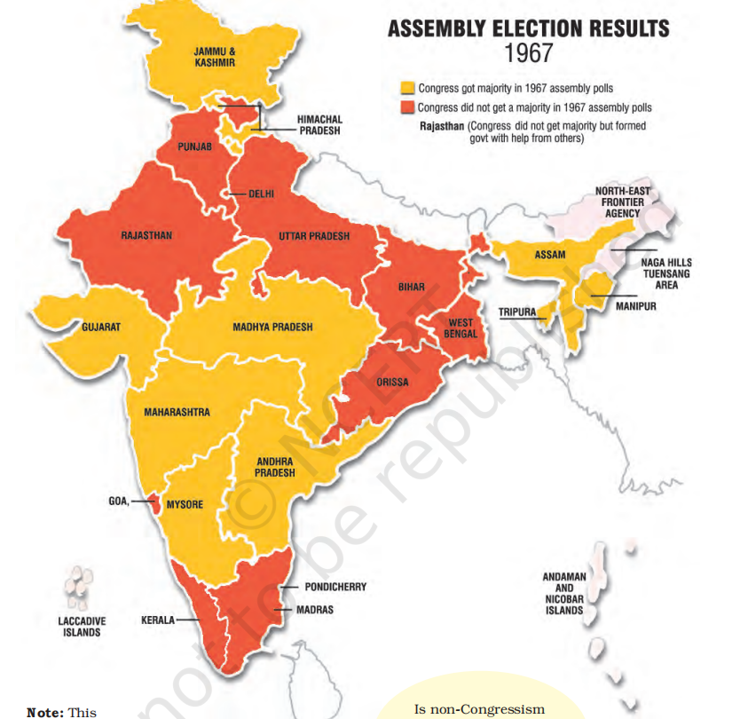
- The 1967 Elections: A Landmark in India's Political and Electoral History
- 1967 is considered a landmark year in India's political and electoral history.
- As discussed in Chapter Two, the Congress party had been the dominant political force in India from 1952 onwards.
- However, this trend was set to undergo significant changes with the 1967 elections.
- Major Changes Before the Fourth General Elections (to get context)
- In the years leading up to the fourth general elections, the country experienced major changes:
- Two Prime Ministers had passed away in quick succession.
- The new Prime Minister, seen as a political novice, had been in office for less than a year.
- Economic Crisis
- The period was marked by a grave economic crisis, triggered by several factors:
- Successive failure of monsoons.
- Widespread drought and decline in agricultural production.
- Serious food shortages and depletion of foreign exchange reserves.
- Drop in industrial production and exports.
- Sharp rise in military expenditure and diversion of resources from economic development and planning.
- One of the first decisions of the Indira Gandhi government was to devaluate the Indian rupee, following what was perceived as pressure from the US.
- Before devaluation, one US dollar could be purchased for less than Rs. 5.
- After devaluation, it cost more than Rs. 7.
- Public Unrest
- The worsening economic situation led to a rise in prices, sparking widespread public protests:
- People protested against price hikes of essential commodities, food scarcity, growing unemployment, and the overall economic condition.
- Bandhs and hartals were called frequently across the country.
- The government viewed these protests as a law and order issue, not recognizing them as a reflection of the people's problems.
- This approach further increased public bitterness and reinforced popular unrest.
- Political Movements and Riots
- Communist and socialist parties launched struggles for greater equality.
- As detailed in the next chapter, a group of communists split from the Communist Party of India (Marxist) to form the Communist Party of India (Marxist-Leninist), leading armed agrarian struggles and organizing peasant agitations.
- This period also witnessed some of the worst Hindu-Muslim riots since Independence.
- Impact on Party Politics
- The political situation could not remain isolated from party politics in the country.
- Opposition parties played a prominent role in organizing public protests and exerting pressure on the government.
- Formation of Anti-Congress Alliances
- Opposition parties, realizing that the division of their votes helped the Congress stay in power, began to unite:
- Ideologically different and disparate parties came together to form anti-Congress fronts in some states.
- In other states, they entered into electoral adjustments, sharing seats to counter the Congress's dominance.
- The opposition saw Indira Gandhi's inexperience and the internal factionalism within the Congress as an opportunity to topple the Congress.
- Ram Manohar Lohia's Strategy of 'Non-Congressism'
- Socialist leader Ram Manohar Lohia coined the strategy of 'non-Congressism', framing it as a necessary political force:
- Lohia argued that Congress rule was undemocratic and opposed to the interests of the poor.
- He believed that the coming together of non-Congress parties was essential to reclaim democracy for the people.
- Additional side information
- C. Natarajan Annadurai (1909-1969)
- Position: Chief Minister of Madras (now Tamil Nadu) from 1967.
- Background: A journalist, popular writer, and orator.
- Political Journey:
- Initially associated with the Justice Party in Madras province.
- Joined the Dravid Kazagham in 1934 and formed the DMK in 1949.
- Political Views:
- Proponent of Dravid culture.
- Strongly opposed the imposition of Hindi and led anti-Hindi agitations.
- Advocated for greater autonomy for states.
- Ram Manohar Lohia (1910-1967)
- Role: Socialist leader, thinker, and freedom fighter.
- Political Journey:
- Among the founders of the Congress Socialist Party.
- Later, led the Socialist Party and then the Samyukta Socialist Party after the split.
- Elected to the Lok Sabha in 1963-67.
- Contributions:
- Founder editor of Mankind and Jan.
- Known for his original contribution to non-European socialist theory.
- Political Views:
- Renowned for sharp attacks on Nehru.
- Developed the strategy of 'non-Congressism'.
- Advocated for reservation for backward castes and opposed English.
- Electoral verdict
- Context of the 1967 Elections:
- Political Background:
- The fourth general elections to the Lok Sabha and State Assemblies were held in February 1967, amid heightened popular discontent and the polarisation of political forces.
- The Congress was facing the electorate for the first time without Jawaharlal Nehru.
- National Results:
- Electoral Outcome:
- The results were a major setback for the Congress at both the national and state levels, often described as a 'political earthquake' by contemporary political observers.
- Congress Performance:
- The Congress did manage to secure a majority in the Lok Sabha but with its lowest seat tally and share of votes since 1952.
- Notable Losses:
- Half of Indira Gandhi's cabinet ministers were defeated.
- Prominent political figures like Kamaraj (Tamil Nadu), S.K. Patil (Maharashtra), Atulya Ghosh (West Bengal), and K.B. Sahay (Bihar) lost in their constituencies.
- State-Level Results:
- Shocking Changes:
- The political shift was even more dramatic at the State level.
- Congress Losses:
- The Congress lost its majority in seven States.
- In two other States, defections prevented the Congress from forming a government.
- States Affected:
- Punjab, Haryana, Uttar Pradesh, Madhya Pradesh, Bihar, West Bengal, Orissa, Madras (now Tamil Nadu), and Kerala.
- Regional Party Success:
- In Madras (Tamil Nadu), the Dravida Munnetra Kazhagam (DMK), a regional party, secured a clear majority, marking the first time a non-Congress party had achieved this in any State.
- The DMK's rise followed its leadership in a massive anti-Hindi agitation led by students, protesting the imposition of Hindi as the official language.
- Coalition Governments:
- In the other eight States, coalition governments consisting of various non-Congress parties were formed.
- Popular Saying:
- A popular saying at the time reflected the magnitude of the change: “One could take a train from Delhi to Howrah and not pass through a single Congress-ruled State.”
- Impact on Congress:
- Shift in Power:
- The widespread loss of Congress power across States led to the question: Was the domination of the Congress over?
- The Emergence of Coalitions in the 1967 Elections:
- Introduction to Coalitions:
- The 1967 elections introduced the phenomenon of coalitions in Indian politics.
- Since no single party had secured a majority, various non-Congress parties came together to form joint legislative parties.
- These coalitions were called Samyukt Vidhayak Dal (SVD), which supported non-Congress governments.
- Nature of SVD Governments:
- The SVD governments were characterized by ideological incongruence among the coalition partners.
- Despite the differences, these diverse parties formed joint governments to challenge the Congress.
- Examples of SVD Governments:
- Bihar:
- The SVD government included two socialist parties: the SSP (Samyukta Socialist Party) and the PSP (Praja Socialist Party), along with the CPI (Communist Party of India) on the left and the Jana Sangh on the right.
- Punjab:
- The coalition was called the 'Popular United Front'.
- It included two rival Akali parties: Sant group and Master group, along with both communist parties (CPI and CPI(M)), the SSP, the Republican Party, and the Bharatiya Jana Sangh.
- The Role of Defections in Post-1967 Politics:
- Introduction to Defections:
- A key feature of Indian politics after the 1967 elections was the role played by defections in the formation and dissolution of state governments.
- Defection refers to an elected representative leaving the party under whose symbol they were elected and joining another party.
- Defections and the Formation of Non-Congress Governments:
- After the 1967 general election, breakaway Congress legislators played a crucial role in forming non-Congress governments in three states: Haryana, Madhya Pradesh, and Uttar Pradesh.
- This period was marked by frequent political realignments and shifting loyalties.
- The Birth of the Phrase 'Aya Ram, Gaya Ram':
- The phrase 'Aya Ram, Gaya Ram' became popular to describe the frequent practice of floor-crossing by legislators.
- The expression originated from the remarkable floor-crossing feat by Gaya Lal, an MLA in Haryana, in 1967.
- Gaya Lal changed his party three times in just a fortnight: from Congress to United Front, back to Congress, and then again to United Front within nine hours.
- When Gaya Lal announced his intention to join the Congress, the Congress leader, Rao Birendra Singh, brought him to the press in Chandigarh and famously declared, “Gaya Ram was now Aya Ram”.
- Gaya Lal's actions became immortalized in the phrase 'Aya Ram, Gaya Ram', which became the subject of numerous jokes and cartoons.
- Constitutional Amendment:
- The frequent defections led to the amendment of the Constitution to prevent such practices and bring stability to the political system.
- Split in the Congress
- Additional side information
- Post-1967 Election Scenario:
- Congress at the Centre and State Losses:
- After the 1967 elections, Congress retained power at the Centre, but with a reduced majority.
- Congress lost power in many States and the results proved that Congress could be defeated at the elections.
- Despite this, there was still no alternative to Congress at the national level.
- Most non-Congress coalition governments formed in the States did not last long:
- They often lost their majority.
- New political combinations were formed, or President's rule had to be imposed.
- Key Political Figures:
- K. Kamaraj (1903-1975):
- A freedom fighter, Congress President, and Chief Minister of Madras (Tamil Nadu).
- Despite educational deprivation, Kamaraj worked to spread education in the Madras province.
- He introduced the mid-day meal scheme for schoolchildren.
- In 1963, Kamaraj proposed the 'Kamaraj Plan', suggesting that senior Congress leaders should resign from office to allow younger party workers to take over.
- The Congress 'Syndicate':
- Formation and Influence:
- The 'Syndicate' was an informal group of Congress leaders who controlled the party's organization.
- It was led by K. Kamaraj, the former Chief Minister of Tamil Nadu, and the then President of the Congress party.
- The Syndicate included powerful State leaders:
- S. K. Patil (Bombay),
- S. Nijalingappa (Mysore),
- N. Sanjeeva Reddy (Andhra Pradesh),
- Atulya Ghosh (West Bengal).
- Both Lal Bahadur Shastri and Indira Gandhi owed their positions to the support of the Syndicate.
- Impact on Indira Gandhi's Leadership:
- The Syndicate had a decisive influence on Indira Gandhi's first Council of Ministers and in policy formulation.
- After the Congress split, the leaders of the Syndicate and those loyal to them stayed with Congress (O).
- Indira Gandhi's Congress (R) won the test of popularity, resulting in the fall of the Syndicate leaders and the loss of their power and prestige after 1971.
- Nijalingappa (1902-2000):
- A senior Congress leader, member of the Constituent Assembly, and a Member of the Lok Sabha.
- He served as the Chief Minister of Mysore (later Karnataka) and is regarded as the maker of modern Karnataka.
- He was also the President of Congress from 1968 to 1971.
- Indira vs. the 'Syndicate'
- The Challenge from Within the Congress:
- Indira Gandhi's primary challenge came not from the opposition but from within her own party — from the 'syndicate', a group of powerful and influential Congress leaders.
- The Syndicate had played a key role in installing Indira Gandhi as Prime Minister by ensuring her election as the leader of the parliamentary party.
- These leaders expected Indira Gandhi to follow their advice, but she gradually sought to assert her own position within both the government and the party.
- Indira Gandhi's Strategy:
- Building Independence:
- To build her independence, Indira Gandhi began to side-line the Syndicate by choosing a trusted group of advisers from outside the party.
- This was a careful and deliberate strategy to assert her authority within the Congress.
- Political and Ideological Struggles:
- Indira Gandhi faced two major challenges:
1. Independence from the Syndicate.
2. Regaining the ground Congress had lost in the 1967 elections.
- Bold Strategy and Ideological Shift:
- Indira Gandhi transformed a simple power struggle into an ideological struggle.
- She launched a series of initiatives to shift government policy to the Left.
- May 1967: The Congress Working Committee adopted the Ten Point Programme, which included:
- Social control of banks,
- Nationalization of General Insurance,
- Ceiling on urban property and income,
- Public distribution of food grains,
- Land reforms, and
- Provision of house sites to the rural poor.
- The Syndicate's Response:
- While the Syndicate leaders formally approved the Left-wing programme, they had serious reservations about its implementation.
- Presidential election, 1969
- Factional Rivalry and the 1969 Split:
- Context of the Split:
- The factional rivalry between the Syndicate and Indira Gandhi came to the forefront in 1969, after the death of President Zakir Hussain, which left the post of President of India vacant.
- Despite Indira Gandhi's reservations, the Syndicate managed to nominate her long-time opponent, N. Sanjeeva Reddy (then Speaker of the Lok Sabha), as the official Congress candidate for the Presidential elections.
- Indira Gandhi's Retaliation:
- Indira Gandhi retaliated by encouraging V.V. Giri, the then Vice-President, to file his nomination as an independent candidate.
- Alongside this, she announced major and popular policy measures, including:
- Nationalization of 14 leading private banks,
- Abolition of the 'privy purse' (special privileges for former princes).
- Morarji Desai's Departure:
- Conflict with Morarji Desai:
- Morarji Desai, who was the Deputy Prime Minister and Finance Minister, had serious differences with Indira Gandhi over the aforementioned issues.
- As a result, Desai eventually left the government.
- Presidential Elections and the Showdown:
- Pre-Election Tensions:
- The Congress party had faced internal differences before, but this time both factions wanted a showdown.
- The Congress President S. Nijalingappa issued a 'whip', instructing all Congress MPs and MLAs to vote for Sanjeeva Reddy, the official Congress candidate.
- Supporters of Indira Gandhi requisitioned a special meeting of the All India Congress Committee (AICC), earning them the name 'Requisitionists', though the meeting was refused.
- Indira Gandhi's Open Call:
- After quietly supporting V.V. Giri, Indira Gandhi openly called for a 'conscience vote', giving Congress MPs and MLAs the freedom to vote according to their own beliefs.
- Result of the Election:
- The election ultimately resulted in the victory of V.V. Giri (the independent candidate) and the defeat of Sanjeeva Reddy, the official Congress candidate.
- Aftermath and the Formal Split:
- Formalization of the Split:
- The defeat of the official Congress candidate formalized the split within the party.
- Indira Gandhi was expelled from the Congress party by the Congress President, while she claimed her faction was the real Congress.
- New Names for the Factions:
- By November 1969, the faction led by the Syndicate was referred to as Congress (Organisation), while Indira Gandhi's group was called Congress (Requisitionists).
- These two factions were also described as the Old Congress and the New Congress.
- Additional side information
- Abolition of Privy Purse:
- Background:
- The privy purse was a grant given to the former rulers' families after the integration of the Princely States.
- This integration, which occurred after the dissolution of princely rule, came with an assurance that the rulers' families could retain certain private property, along with a hereditary grant or government allowance based on the extent, revenue, and potential of the merging state.
- Criticism of Privileges:
- Initially, there was little criticism of these privileges, as the primary focus was on integration and consolidation.
- However, such hereditary privileges were inconsistent with the principles of equality and social and economic justice laid out in the Constitution of India.
- Jawaharlal Nehru had expressed dissatisfaction with this arrangement on several occasions.
- Indira Gandhi's Support:
- Following the 1967 elections, Indira Gandhi supported the demand for abolishing the privy purse.
- Morarji Desai opposed the move, calling it morally wrong and a 'breach of faith with the princes'.
- Constitutional Amendment Attempts:
- The government attempted to bring a Constitutional amendment in 1970 to abolish the privy purse, but it was not passed in the Rajya Sabha.
- The government then issued an ordinance, but it was struck down by the Supreme Court.
- Abolition as an Election Issue:
- Indira Gandhi turned this issue into a major election topic in the 1971 elections, gaining significant public support for her stance.
- Post-Election Victory:
- Following the massive victory in the 1971 elections, the Constitution was amended to remove the legal obstacles to the abolition of the privy purse.
- The 1971 Election and Restoration of Congress
- Indira Gandhi's Government after the Congress Split:
- Minority Government:
- After the split in the Congress, Indira Gandhi's government was reduced to a minority.
- Despite this, her government continued in office, relying on issue-based support from parties like the Communist Party of India (CPI) and the Dravida Munnetra Kazhagam (DMK).
- Socialist Orientation:
- During this period, the government made conscious efforts to project its socialist credentials.
- Indira Gandhi actively campaigned for the implementation of existing land reform laws and pushed for further land ceiling legislation.
- Dissolution of Lok Sabha:
- In an effort to end her dependence on other political parties, strengthen her position in the Parliament, and seek a popular mandate for her policies, Indira Gandhi's government recommended the dissolution of the Lok Sabha in December 1970.
- This decision was seen as a bold and surprising move.
- Fifth General Election:
- The fifth general election to the Lok Sabha was held in February 1971, following the dissolution.
- The Electoral Contest and Indira Gandhi's Strategy:
- Challenges for Congress (R):
- The electoral contest appeared loaded against Congress (R), as it was just one faction of an already weakened party.
- It was widely believed that the real organizational strength of the Congress party lay with Congress (O).
- To make matters worse, all major non-communist, non-Congress opposition parties formed an electoral alliance called the Grand Alliance. This included the SSP, PSP, Bharatiya Jana Sangh, Swatantra Party, and Bharatiya Kranti Dal.
- In contrast, the ruling party had an alliance with the CPI.
- Indira Gandhi's Advantage:
- Despite these challenges, Congress (R) had something its opponents lacked: an issue, an agenda, and a positive slogan.
- The Grand Alliance lacked a coherent political programme, with their only common aim being the slogan “Indira Hatao” (Remove Indira).
- Indira Gandhi countered with a positive programme, captured in the famous slogan “Garibi Hatao” (Remove Poverty).
- Indira Gandhi's Political Programme:
- Indira Gandhi's agenda focused on:
- Growth of the public sector.
- Ceiling on rural land holdings and urban property.
- Removal of disparities in income and opportunity.
- Abolition of princely privileges.
- Through Garibi Hatao, she aimed to generate support among disadvantaged groups, especially:
- Landless laborers, Dalits, Adivasis, minorities, women, and unemployed youth.
- Political Strategy:
- The Garibi Hatao slogan and the programmes that followed were a key part of Indira Gandhi's political strategy to build an independent, nationwide political support base.
- The outcome and after
- Results of the 1971 Lok Sabha Elections:
- Electoral Outcome:
- The 1971 Lok Sabha elections produced dramatic results, much like the decision to hold them.
- The Congress (R)-CPI alliance won 375 seats and secured 48.4% of the vote, marking their strongest performance in the first five general elections.
- Indira Gandhi's Congress (R) alone won 352 seats and about 44% of the popular votes.
- Congress (O), despite having numerous stalwarts, could only secure 16 seats and less than one-fourth of the votes compared to Congress (R).
- This victory established Indira Gandhi's Congress (R) as the “real” Congress, restoring its dominant position in Indian politics.
- The Grand Alliance of the opposition proved a grand failure, securing fewer than 40 seats in total.
- Aftermath of the 1971 Elections:
- Political and Military Crisis:
- Shortly after the elections, a political and military crisis erupted in East Pakistan (now Bangladesh), leading to the Indo-Pak war and the formation of Bangladesh.
- These events boosted Indira Gandhi's popularity, with even opposition leaders admiring her statesmanship.
- State Assembly Elections:
- Following this, Indira Gandhi's party swept all the State Assembly elections held in 1972.
- She was seen as both a protector of the poor and a strong nationalist leader, with opposition forces unable to challenge her leadership.
- Restoration of Congress Dominance:
- Congress' Resurgence:
- With two consecutive electoral victories—one at the national level (1971) and one at the State level (1972)—the dominance of Congress was fully restored.
- By this time, Congress was in power in almost all States and had gained popularity across different social sections.
- Indira Gandhi's Strength:
- Within a span of four years, Indira Gandhi had successfully warded off challenges to her leadership and to the dominance of the Congress party.
- The New Congress: A Re-invented Party
- Not a Revival, But a Re-invention:
- Indira Gandhi did not revive the old Congress party; she re-invented it.
- While the party regained a similar level of popularity as in the past, its structure and functioning were different.
- Key Features of the New Congress:
- Reliance on Leadership: The new Congress was built around the supreme leader's popularity, with a relatively weak organisational structure.
- Lack of Factions: The party had fewer factions, which meant it could not accommodate a broad range of opinions and interests.
- Dependence on Specific Social Groups: The party's support base shifted towards specific social groups, including the poor, women, Dalits, Adivasis, and minorities.
- Changing the Nature of the Congress System:
- Indira Gandhi restored the Congress system, but it was not the same as before. She changed its nature, making it more centralized and less diverse in terms of internal opinions.
- Challenges for the New Congress
- Inability to Absorb Conflicts:
- Despite its popularity, the new Congress lacked the capacity to absorb tensions and conflicts, a feature that the old Congress system had been known for.
- Shrinking Spaces for Democratic Expression:
- As Congress consolidated its power and Indira Gandhi assumed unprecedented political authority, democratic spaces for people's aspirations shrank.
- Rising Popular Unrest:
- Issues of development and economic deprivation led to growing popular unrest and mobilization, creating challenges for the government.
- Emergence of a Political Crisis:
- The growing unrest and lack of democratic expression eventually led to a political crisis, which threatened the very existence of constitutional democracy in India.
- The crisis of democratic order
- Background to Emergency
- Political Changes and Tensions Since 1967
- Indira Gandhi's Rise to Prominence:
- Since 1967, Indira Gandhi had emerged as a dominant leader, enjoying tremendous popularity.
- Increased Party Competition and Polarization:
- This period marked a time of bitter and polarized party competition in Indian politics.
- Government-Judiciary Tensions:
- The relationship between the government and the judiciary became increasingly strained.
- The Supreme Court found many of the government's initiatives to be in violation of the Constitution.
- Congress's Response to the Judiciary:
- The Congress party viewed the Court's stance as contrary to democratic principles and parliamentary supremacy.
- Congress alleged that the Court was a conservative institution hindering the implementation of pro-poor welfare programs.
- Opposition's Criticism of Personalization of Politics:
- The opposition parties believed that politics had become overly personalized, with governmental authority being converted into personal authority.
- Impact of the Congress Split:
- The split in the Congress party deepened the divisions between Indira Gandhi and her political opponents.
- Economic Struggles and Political Unrest (Post-1971 Elections)
- Impact of the 1971 Elections:
- In the 1971 elections, Congress campaigned with the slogan “Garibi Hatao” (Remove Poverty).
- However, the socio-economic conditions in the country did not show significant improvement after 1971-72.
- Effects of the Bangladesh Crisis:
- The Bangladesh crisis placed a heavy strain on India's economy, with about eight million refugees crossing the East Pakistan border into India.
- This was followed by the war with Pakistan, which further stressed resources.
- International Challenges:
- After the war, the U.S. government stopped all aid to India.
- In the international market, oil prices soared, leading to widespread price increases.
- Prices increased by 23% in 1973 and 30% in 1974, contributing to severe inflation.
- Economic Hardships:
- The high inflation caused considerable hardship for the people.
- Industrial growth was slow, and unemployment, especially in rural areas, was very high.
- In response to these economic pressures, the government froze the salaries of its employees, increasing dissatisfaction.
- Agricultural Decline:
- The failure of monsoons in 1972-1973 caused a sharp decline in agricultural productivity.
- Food grain output dropped by 8%, further exacerbating economic struggles.
- Public Discontent:
- A general sense of dissatisfaction prevailed across the country due to the worsening economic situation.
- Non-Congress opposition parties were able to organize popular protests more effectively.
- Student Unrest and Marxist-Leninist Movements:
- Student unrest, which had been ongoing since the late 1960s, became more pronounced during this period.
- Marxist groups, who rejected parliamentary politics, became more active, resorting to arms and insurgency to overthrow the capitalist system.
- These groups, known as Marxist-Leninist (now Maoist) or Naxalites, were particularly strong in West Bengal, where the state government took stringent measures to suppress them.
- Additional side information
- Key Slogans from 1974
- Bihar Movement Slogan (1974):
- “Sampoorna Kranti ab nara hai, bhavi itihas hamara hai”
- Translation: With Total Revolution as our motto, the future belongs to us.
- Congress Party Slogan (1974):
- “Indira is India, India is Indira”
- Given by: D. K. Barooah, President of the Congress.
- Impact of Students' Protests in Gujarat and Bihar on State and National Politics
- Gujarat Students' Protest (January 1974):
- Causes: Rising prices of food grains, cooking oil, and other essential commodities; corruption in high places.
- The protest, initially led by students, was joined by major opposition parties, resulting in widespread agitation.
- Outcome: The imposition of President's rule in Gujarat.
- Opposition parties demanded fresh elections for the state legislature. Morarji Desai, a prominent leader of Congress (O), threatened an indefinite fast unless fresh elections were held.
- Election Results: Under intense pressure, assembly elections were held in June 1975, and the Congress was defeated.
- Bihar Students' Protest (March 1974):
- Causes: Rising prices, food scarcity, unemployment, and corruption.
- Students invited Jayaprakash Narayan (JP) to lead the movement, on the condition that it would remain non-violent and expand beyond Bihar.
- The movement soon gained national appeal, with people from all walks of life joining.
- JP's demand: The dismissal of the Congress government in Bihar and a call for total revolution to establish true democracy.
- A series of protests including bandhs, gehraos, and strikes were organized, but the government refused to resign.
- National Influence of the Bihar Movement:
- Expansion: The Bihar movement began to influence national politics, with JP aiming to spread it across the country.
- Railway Employees' Strike: A nationwide strike by railway employees threatened to paralyze the country.
- People's March to Parliament (1975): Led by JP, this was one of the largest political rallies in the capital.
- Support from Opposition Parties: Non-Congress parties such as the Bharatiya Jana Sangh, Congress (O), Bharatiya Lok Dal, and the Socialist Party supported JP as an alternative to Indira Gandhi.
- Criticism and Perception:
- The Gujarat and Bihar agitations were largely seen as anti-Congress and personal opposition to Indira Gandhi's leadership.
- Critics viewed JP's mass agitation tactics and political ideas with skepticism, questioning the effectiveness and motivations behind the protests.
- The Naxalite Movement
- Origins and Formation:
- In 1967, a peasant uprising occurred in the Naxalbari police station area of Darjeeling Hills, West Bengal, led by local cadres of the Communist Party of India (Marxist).
- The movement spread across several states of India, becoming widely known as the Naxalite movement.
- In 1969, a faction split from the CPI (M), leading to the formation of the Communist Party (Marxist-Leninist) (CPI-ML) under the leadership of Charu Majumdar.
- The CPI-ML argued that democracy in India was a sham and adopted a strategy of protracted guerrilla warfare to bring about revolution.
- Methods and Spread:
- The movement focused on using force to seize land from rich landowners and redistribute it to the poor and landless.
- Advocated for violent means to achieve political goals.
- Despite government measures like preventive detention, the Naxalite movement spread to other regions of the country.
- Over time, the movement splintered into various parties and organizations, some of which, like CPI-ML (Liberation), participate in open democratic politics.
- Current Situation:
- Approximately 75 districts in nine states are affected by Naxalite violence, predominantly in backward, Adivasi-inhabited areas.
- In these regions, sharecroppers, under-tenants, and small cultivators face denial of basic rights such as tenure security, fair wages, and access to resources.
- Exploitation by moneylenders, forced labor, and resource expropriation are common in these areas, fueling the growth of the Naxalite movement.
- Government Response and Criticism:
- The government has employed stern measures to combat the movement, leading to criticism from human rights activists for violations of constitutional norms.
- Both Naxalite violence and government counteractions have resulted in thousands of deaths.
- Key Figures:
- Charu Majumdar (1918-1972):
- Leader of the Naxalbari uprising, founder of the CPI-ML, and a proponent of revolutionary violence. He died in police custody.
- Loknayak Jayaprakash Narayan (JP) (1902-1979):
- A prominent leader of the Bihar movement, opposed the Emergency, and played a key role in the formation of the Janata Party.
- Initially a Marxist, JP later became a Gandhian and worked for peace in various regions of India.
- Railway Strike of 1974
- Background:
- In May 1974, the National Coordination Committee for Railwaymen's Struggle, led by George Fernandes, called for a nationwide railway strike.
- The strike was driven by demands related to bonuses and service conditions, with the government opposing the demands.
- Impact:
- The strike disrupted the functioning of India's largest public sector undertaking, with the entire railway system coming to a halt for over twenty days.
- The strike severely impacted the country's economy, particularly the transportation of goods.
- Government Response:
- The government declared the strike illegal and arrested many of the leaders.
- The Territorial Army was deployed to protect railway tracks.
- Outcome:
- The strike was eventually called off after 20 days, without any settlement, as the government refused to concede to the demands of the striking workers.
- The strike highlighted issues of workers' rights and the role of strikes in essential services.
- Tensions Between the Government and the Judiciary
- Constitutional Issues and Judicial Conflicts:
- The period witnessed significant differences between the government, the ruling party, and the judiciary, particularly over the relationship between Parliament and the judiciary. Three key constitutional issues emerged:
- Abridging Fundamental Rights: The Supreme Court ruled that Parliament cannot abridge Fundamental Rights.
- Curtailing Right to Property: The Court held that Parliament cannot amend the Constitution to curtail the right to property.
- Abridging Fundamental Rights for Directive Principles: Parliament amended the Constitution to allow the abridging of Fundamental Rights to give effect to Directive Principles. However, the Supreme Court rejected this provision as well.
- These developments led to a crisis in the relations between the government and the judiciary.
- Kesavananda Bharati Case:
- The crisis culminated in the famous Kesavananda Bharati Case. In this case, the Court ruled that certain basic features of the Constitution are beyond the amending power of Parliament, thus further intensifying the conflict between the executive and judiciary.
- Superseding Judicial Seniority:
- After the Supreme Court's decision in 1973, a vacancy arose for the position of Chief Justice of India. It was customary for the senior-most judge to be appointed. However, the government bypassed the seniority of three judges and appointed Justice A. N. Ray as the Chief Justice.
- This decision became politically controversial because the three superseded judges had previously given rulings against the government's stance, mixing constitutional interpretations with political ideologies.
- The Need for a 'Committed' Judiciary:
- Supporters of the Prime Minister began advocating for a judiciary and bureaucracy that were “committed” to the vision of the executive and the legislature, signaling a desire for alignment between the government and the judicial system.
- The Climax of Confrontation:
- The confrontation reached its peak with the High Court ruling declaring Indira Gandhi's election invalid, adding to the growing tensions between the judiciary and the executive.
- Declaration of Emergency
- Allahabad High Court Judgment on Indira Gandhi's Election
- Background:
- On 12 June 1975, Justice Jagmohan Lal Sinha of the Allahabad High Court declared Indira Gandhi's election to the Lok Sabha invalid.
- The decision was based on an election petition filed by Raj Narain, a socialist leader who had contested against her in the 1971 elections.
- The petition alleged that Indira Gandhi had misused the services of government servants during her campaign.
- Impact of the Judgment:
- The High Court's ruling meant that Indira Gandhi was no longer an MP and, as a result, could not continue as Prime Minister unless re-elected within six months.
- Supreme Court's Partial Stay:
- On 24 June 1975, the Supreme Court issued a partial stay on the High Court's order.
- This allowed her to remain an MP but prevented her from participating in Lok Sabha proceedings until her appeal was heard.
- Political Confrontation and the Declaration of Emergency
- Opposition's Push for Resignation:
- On 25 June 1975, the opposition, led by Jayaprakash Narayan, demanded Indira Gandhi's resignation.
- They organized a massive demonstration at Ramlila Grounds in Delhi.
- Jayaprakash announced a nationwide satyagraha for her resignation and called on army, police, and government employees to disobey “illegal and immoral orders.”
- This movement posed a significant challenge to the government's operations, as it threatened to bring the government's activities to a halt.
- Government's Response:
- Faced with mounting pressure, the government declared a state of emergency on 25 June 1975.
- The government cited a threat of internal disturbances and invoked Article 352 of the Constitution, which allows for the declaration of an emergency due to either an external threat or internal disturbances.
- Emergency Powers:
- The declaration of emergency granted the government extraordinary powers, including:
- Suspension of the federal distribution of powers, centralizing authority with the union government.
- The ability to curtail or restrict Fundamental Rights during the emergency.
- The emergency status was seen as a condition where normal democratic processes could not function, and thus, special powers were granted.
- Immediate Actions:
- On the night of 25 June 1975, Indira Gandhi recommended the imposition of the emergency to President Fakhruddin Ali Ahmed, who issued the proclamation immediately.
- After midnight, electricity was cut off to major newspaper offices, and opposition leaders and workers were arrested.
- The Cabinet was informed about these developments at a special meeting on 26 June at 6 a.m..
- Impact/Consequences of Emergency and Government Actions
- Political Repression and Control:
- The declaration of Emergency brought a sudden halt to the opposition agitation, with strikes being banned and many opposition leaders arrested.
- The political atmosphere became quiet, but tense.
- Press Censorship:
- The government, using its special powers under the Emergency provisions, suspended freedom of the press.
- Newspapers were required to obtain prior approval for all material to be published, enforcing press censorship.
- Suppression of Social and Political Groups:
- Rashtriya Swayamsevak Sangh (RSS) and Jamait-e-Islami were banned, citing concerns over social and communal disharmony.
- Protests, strikes, and public agitations were also prohibited.
- Most significantly, Fundamental Rights were suspended, including citizens' rights to approach the Court for the restoration of their rights.
- Preventive Detention:
- The government extensively used preventive detention to arrest and detain individuals without charge or evidence of an offence, based on the assumption they might commit one.
- Arrested individuals could not challenge their detention via habeas corpus petitions.
- The Supreme Court, in April 1976, overruled the High Courts' rulings that allowed habeas corpus petitions during an emergency, effectively giving the government the power to deny citizens' right to life and liberty during this period.
- This judgment is considered one of the most controversial in Indian judicial history, as it closed the doors of the judiciary to citizens during the Emergency.
- Acts of Dissent and Resistance:
- Despite the oppressive measures, many political workers went underground to organize protests.
- Newspapers like Indian Express and Statesman protested censorship by leaving blank spaces where news was censored.
- Magazines like Seminar and Mainstream closed rather than comply with censorship.
- Journalists who spoke out against the Emergency were arrested.
- Underground publications were created to bypass censorship.
- Notable writers, such as Shivarama Karanth and Fanishwarnath Renu, returned their Padma awards in protest against the suspension of democracy.
- However, such acts of defiance were rare.
- Constitutional Amendments:
- In response to the Indira Gandhi case (Allahabad High Court ruling), an amendment was made declaring that the elections of the Prime Minister, President, and Vice-President could not be challenged in the Court.
- The Forty-second Amendment, passed during the Emergency, introduced several changes, including:
- Extension of the legislature duration from five to six years (permanent change, not just for the Emergency period).
- Postponement of elections during an Emergency by one year (delaying elections from 1976 to 1978).
- Controversies regarding Emergency
- The Emergency is considered one of the most controversial episodes in Indian politics for several reasons:
- Differing Viewpoints on the Need for Emergency:
- There are varying opinions on whether it was necessary to declare the Emergency in the first place.
- Suspension of Democratic Functioning:
- The government, using its constitutional powers, practically suspended democratic functioning during the Emergency.
- Excesses During the Emergency:
- Investigations by the Shah Commission revealed that there were numerous excesses committed during the Emergency.
- Assessments and Lessons:
- There are differing assessments of the lessons the Emergency offers for the practice of democracy in India.
- Was the Emergency necessary?
- Reason for Declaring Emergency:
- The Constitution mentioned 'internal disturbances' as the reason for declaring Emergency, a ground never used before 1975.
- The government argued that frequent agitations, protests, and collective actions were detrimental to democracy and hindered governance.
- Indira Gandhi and her supporters believed that extra-parliamentary politics targeting the government destabilized the country and diverted energies from development to law and order maintenance.
- Indira Gandhi wrote in a letter to the Shah Commission, claiming subversive forces were attempting to disrupt government policies and dislodge her from power through extra-constitutional means.
- Support for Emergency:
- Some parties, like the CPI, which continued to support the Congress during the Emergency, believed there was an international conspiracy against India's unity and that restrictions on agitations were justified.
- The CPI felt that the agitations led by JP were driven by the middle class, opposing the Congress's radical policies. However, post-Emergency, the CPI regretted its support for the Emergency.
- Criticism of Emergency:
- Critics, including JP and other opposition leaders, argued that popular struggles had been a part of Indian politics since the freedom movement.
- They believed that in a democracy, public protests against the government were a legitimate right.
- The Bihar and Gujarat agitations were peaceful and non-violent. Arrested individuals were not tried for anti-national activities, and no cases were registered against most detainees.
- The Home Ministry, responsible for monitoring law and order, did not express concern over the situation. The critics argued that the government had sufficient routine powers to address the agitations.
- They claimed the real threat was to the ruling party and Indira Gandhi's personal power, not to the country's unity or integrity.
- Critics contend that Indira Gandhi misused the constitutional provision meant for saving the country to protect her political position.
- Additional side information
- Shah Commission of Inquiry:
- In May 1977, the Janata Party government appointed a Commission of Inquiry headed by Justice J.C. Shah, the retired Chief Justice of the Supreme Court of India.
- The purpose was to investigate allegations of abuse of authority, excesses, and malpractices during the Emergency proclaimed on 25 June 1975.
- The Commission examined various forms of evidence and called numerous witnesses, including Indira Gandhi, who appeared but refused to answer questions.
- The Government of India accepted the findings, observations, and recommendations from the two interim reports and the final report of the Shah Commission. These reports were presented in both houses of Parliament.
- Indira Gandhi's Address on 26 June 1975:
- In her address on All India Radio, Indira Gandhi stated:
- “In the name of democracy, it has been sought to negate the very functioning of
- Democracy. Duly elected governments have not been allowed to function…
- Agitations have surcharged the atmosphere, leading to violent incidents… Certain
- Persons have gone to the length of inciting our armed forces to mutiny and our
- Police to rebel. The forces of disintegration are in full play, and communal passions
- Are being aroused, threatening our unity. How can any Government worth the name
- Stand by and allow the country's stability to be imperilled? The actions of a few are
- Endangering the rights of the vast majority.”
- Implementation of Emergency (What happened during emergency?)
- The actual implementation of the Emergency remains a contentious issue with debates on whether the government misused its Emergency powers and engaged in excesses and abuses of authority.
- Government's Intentions:
- The government, led by Indira Gandhi, claimed that the Emergency was imposed to restore law and order, enhance efficiency, and implement pro-poor welfare programs.
- A twenty-point programme was announced, which included:
- Land reforms
- Land redistribution
- Review of agricultural wages
- Workers' participation in management
- Eradication of bonded labour
- In the early months of the Emergency, urban middle classes were content with the end of agitations and enforced discipline among government employees.
- The poor and rural populations had expectations of the government fulfilling its promises for welfare programs.
- Criticism of the Emergency:
- Critics argue that the government's promises were largely unfulfilled and that the government's stated intentions were used to divert attention from the excesses taking place.
- The large-scale use of preventive detention is questioned, with 676 opposition leaders arrested and an estimated one lakh eleven thousand people detained under preventive detention laws.
- Press restrictions were severely imposed, often without proper legal sanction. For instance, the General Manager of the Delhi Power Supply Corporation received verbal orders from the Lt. Governor of Delhi to cut electricity to newspaper presses at 2:00 a.m. on 26 June 1975, restoring it after a few days when censorship was set up.
- Allegations of Unofficial Governmental Control:
- Sanjay Gandhi, Indira Gandhi's younger son, did not hold any official position during the Emergency but allegedly gained control over the administration, often interfering with government functions.
- His involvement in the demolitions and forced sterilizations in Delhi became highly controversial.
- Impact on Common People:
- The Emergency severely impacted the lives of common people, with reports of:
- Torture and custodial deaths.
- Arbitrary relocations of poor people.
- Forced sterilizations due to the government's over-enthusiasm for population control.
- These actions demonstrated the dangers of suspending normal democratic processes.
- Additional side information
- The Case of P. Rajan:
- Incident:
- On 1 March 1976, P. Rajan, a final-year student at Calicut Engineering College, Kerala, was forcibly taken from his hostel along with another student, Joseph Chali, during the early hours of the morning.
- Father's Efforts:
- Rajan's father, T.V. Eachara Warrior, made desperate attempts to locate his son, meeting legislators, petitioning authorities, and seeking the help of the Home Minister, K. Karunakaran.
- Legal Proceedings:
- As the Emergency was in effect, issues concerning citizens' liberties couldn't be raised in the courts.
- Once the Emergency was lifted, Warrior filed a petition for writ of Habeas Corpus in the Kerala High Court at Ernakulam.
- Evidence and Findings:
- Witness testimonies revealed that Rajan had been taken to the Tourist Bungalow in Calicut the following day, where he was tortured by the police.
- In a subsequent court hearing, the Kerala government admitted that Rajan had died in unlawful police custody due to continuous torture by the police.
- Legal and Political Consequences:
- The Division Bench of Kerala High Court ruled that K. Karunakaran had lied to the court about the circumstances of Rajan's death.
- K. Karunakaran, by then the Chief Minister of Kerala, was forced to resign due to the strictures passed by the High Court.
- Source: Shah Commission of Inquiry, Interim Report II
- Lessons from the Emergency:
- Strengths and Weaknesses of India's Democracy:
- The Emergency highlighted both the weaknesses and strengths of India's democracy. While some observers believe India ceased to be democratic during this period, it is notable that normal democratic functioning resumed quickly after the Emergency.
- A key lesson from the Emergency is that it is extremely difficult to abolish democracy in India.
- Constitutional Ambiguities and Amendments:
- The Emergency revealed ambiguities in the Constitution's provisions, which have been rectified since then.
- Internal Emergency can now only be proclaimed on the grounds of armed rebellion.
- Additionally, it is now required that the Union Cabinet provide written advice to the President before declaring an Emergency.
- Awareness of Civil Liberties:
- The Emergency increased public awareness of the value of civil liberties.
- The courts have taken a more active role in protecting civil liberties since the Emergency, responding to their inability to do so effectively during the period.
- The experience led to the rise of civil liberties organizations focused on safeguarding individual rights.
- Ongoing Issues and Tensions:
- The critical years of Emergency raised several unresolved issues:
- There is tension between the routine functioning of a democratic government and continuous political protests.
- Questions arise about the correct balance between the right to protest and maintaining order in a democracy. Should citizens have full freedom to protest, or should there be limitations? What are the limits of protest?
- Role of Police and Administration:
- The police and administration played a key role in implementing Emergency rule. However, these institutions could not function independently during the Emergency.
- They were turned into political instruments of the ruling party, and according to the Shah Commission Report, both became vulnerable to political pressures.
- Unfortunately, this problem did not vanish after the Emergency.
- Politics after Emergency
- Valuable Lesson from the Emergency:
- The most valuable and lasting lesson of the Emergency was learned as soon as the Emergency ended and the Lok Sabha elections were announced.
- The 1977 elections turned into a referendum on the experience of the Emergency, particularly in north India, where its impact was most strongly felt.
- Opposition's Slogan and Voter Response:
- The opposition fought the election with the slogan of 'save democracy'.
- The people's verdict was decisively against the Emergency.
- Impact on Democracy:
- The lesson from the 1977 elections was clear: governments perceived as anti-democratic are severely punished by the voters.
- In this sense, the experience of 1975-77 ended up strengthening the foundations of democracy in India.
- Lok Sabha Elections, 1977
- 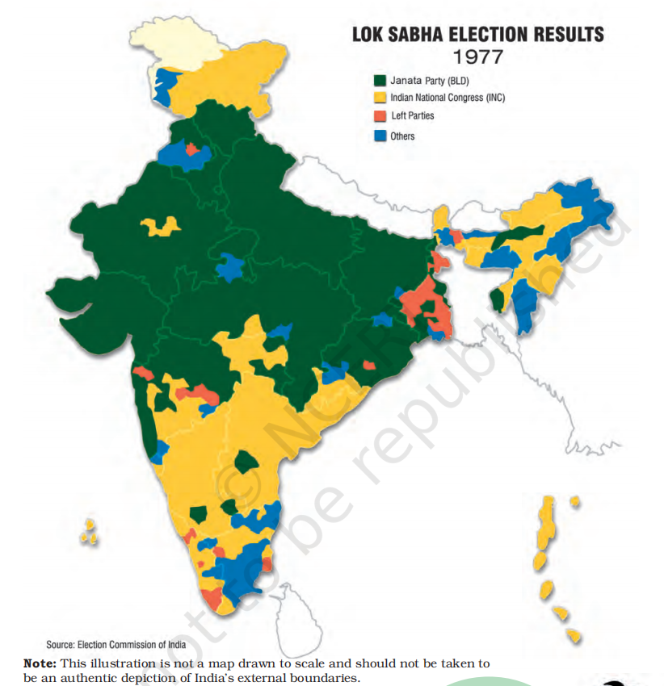
- Decision to Hold Elections:
- In January 1977, after eighteen months of Emergency, the government decided to hold elections.
- Opposition leaders and activists were released from jails, and elections were scheduled for March 1977.
- This left the opposition with very little time, but political developments unfolded rapidly.
- Formation of the Janata Party:
- The major opposition parties, which had been coming closer even before the Emergency, united just before the elections to form the Janata Party.
- The Janata Party accepted Jayaprakash Narayan as its leader.
- Some Congress leaders opposed to the Emergency also joined the Janata Party, while others formed a separate party, Congress for Democracy, which later merged with the Janata Party.
- Campaign Focus and Public Sentiment:
- The Janata Party turned the election into a referendum on the Emergency, focusing on the nondemocratic nature of the rule and the excesses during the period.
- Amidst the backdrop of mass arrests and press censorship, public opinion was strongly against the Congress.
- Jayaprakash Narayan became the popular symbol of the restoration of democracy.
- The formation of the Janata Party helped consolidate non-Congress votes, making the situation tough for Congress.
- Election Results:
- The results surprised everyone. For the first time since Independence, the Congress party was defeated in the Lok Sabha elections.
- Congress won only 154 seats and its share of popular votes fell to less than 35%.
- The Janata Party and its allies won 330 out of 542 seats in the Lok Sabha, with the Janata Party itself securing 295 seats, enjoying a clear majority.
- In north India, there was a massive electoral wave against the Congress. Congress lost in Bihar, Uttar Pradesh, Delhi, Haryana, and Punjab. It won only one seat each in Rajasthan and Madhya Pradesh.
- Indira Gandhi was defeated from Rae Bareli, and her son Sanjay Gandhi lost from Amethi.
- Regional Differences in Election Results:
- Despite the wave against Congress in the north, the party retained many seats in Maharashtra, Gujarat, Orissa, and the southern States.
- The impact of the Emergency was not equally felt across all States. The forced relocation, displacements, and forced sterilizations were concentrated in the northern States.
- Additionally, long-term political changes in north India contributed to the outcome. The middle castes in north India began to move away from Congress, and the Janata Party became a platform for these sections to unite.
- Therefore, the 1977 elections were not solely about the Emergency.
- Additional side information
- Morarji Desai (1896-1995):
- Freedom Fighter and Gandhian leader.
- Proponent of Khadi, naturopathy, and prohibition.
- Served as Chief Minister of Bombay State.
- Held the position of Deputy Prime Minister from 1967 to 1969.
- Joined Congress (O) after the split in the Congress party.
- Became the Prime Minister from 1977 to 1979, marking the first time a non-Congress party leader held the office.
- Janata Government
- 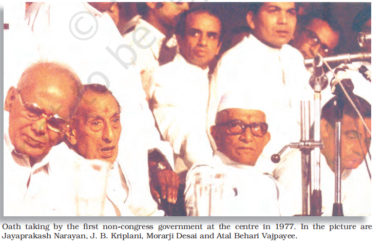
- The Janata Party Government after 1977 Elections:
- The Janata Party that came to power in 1977 was far from cohesive.
- Competition for the Prime Minister's post arose between three leaders:
- Morarji Desai, a rival of Indira Gandhi since 1966-67.
- Charan Singh, leader of the Bharatiya Lok Dal and a farmers' leader from Uttar Pradesh.
- Jagjivan Ram, a senior minister with vast experience in Congress governments.
- Morarji Desai became the Prime Minister, but the internal power struggle within the party continued.
- Challenges within the Janata Party:
- The opposition to Emergency briefly kept the Janata Party united, but its critics noted the party's lack of direction, leadership, and a cohesive programme.
- The Janata Party failed to introduce a fundamental change in policy compared to the Congress.
- The Janata Party split, and Morarji Desai's government lost its majority in less than 18 months.
- Charan Singh's Brief Government:
- A new government under Charan Singh was formed, initially backed by the Congress.
- The Congress later withdrew its support, leading to the collapse of Charan Singh's government after just four months.
- 1980 Elections:
- Fresh Lok Sabha elections were held in January 1980, where the Janata Party suffered a major defeat, especially in north India, where it had won a landslide in 1977.
- The Congress, led by Indira Gandhi, nearly replicated its 1971 victory, winning 353 seats and returning to power.
- Lessons from the 1977-79 Experience:
- The events taught a key lesson in democratic politics: unstable and quarrelsome governments are severely punished by voters.
- Additional side information
- Chaudhary Charan Singh (1902-1987):
- Prime Minister of India from July 1979 to January 1980.
- Freedom fighter and active in Uttar Pradesh politics.
- Proponent of rural and agricultural development.
- Left Congress in 1967 and founded the Bharatiya Kranti Dal.
- Served as Chief Minister of Uttar Pradesh twice.
- One of the founders of the Janata Party in 1977, where he became Deputy Prime Minister and Home Minister (1977-79).
- Founder of Lok Dal.
- Legacy
- Changes in the Party System (1977-1980):
- Between 1977 and 1980, the Indian political landscape underwent dramatic changes.
- Since 1969, the Congress Party started shedding its umbrella character, which previously accommodated various ideological groups.
- The Congress began identifying itself with a specific ideology, claiming to be the only socialist and pro-poor party.
- By the early 1970s, Congress's political success was heavily dependent on:
- Sharp social and ideological divisions.
- The appeal of Indira Gandhi as a central figure.
- This shift in the Congress party led opposition parties to focus more on 'non-Congressism', realizing the need to prevent a split of non-Congress votes during elections.
- This factor played a major role in the 1977 elections.
- The Role of Backward Castes and Reservations:
- Since 1977, the issue of backward castes began to influence politics more prominently.
- A key factor in the 1977 election results was the shift in the backward castes of north India, who played an important role in electing non-Congress governments.
- The Mandal Commission was appointed by the Janata Party government in response to the growing controversy over reservations for 'other backward classes' in states like Bihar.
- This shift marked a significant change in India's political and caste dynamics.
- Emergency and the Constitutional vs. Political Crisis:
- The Emergency period (1975-77) can be described as both a constitutional crisis and a political crisis:
- Constitutional crisis: Originated from the battle over the jurisdiction of Parliament and the judiciary.
- Political crisis: Despite an absolute majority, the Congress leadership chose to suspend the democratic process.
- The Constitution's makers had trusted that all political parties would follow democratic norms, even during an Emergency, but the powers granted were abused during the Emergency.
- This political crisis was seen as more severe than the constitutional crisis.
- Mass Protests vs. Parliamentary Democracy:
- A critical issue that emerged was the role and extent of mass protests in India's parliamentary democracy.
- There was a clear tension between institution-based democracy and democracy based on spontaneous popular participation.
- This tension can be traced back to the party system's failure to represent the aspirations of the people.
- In the following chapters, the manifestations of this tension will be explored, particularly in relation to popular movements and debates on regional identity.
- Rise of popular movements
- The Chipko Movement: A Landmark Environmental Protest
- Background:
- The villagers were protesting against the government's commercial logging practices, which had been permitted in the region.
- The novel protest tactic involved hugging the trees to prevent them from being felled.
- Emergence:
- The Chipko movement began in a few villages in Uttarakhand, triggered by the forest department denying permission for villagers to fell ash trees for agricultural tools.
- However, the forest department allotted the same land for commercial use to a sports manufacturer, angering the villagers.
- Wider Impact:
- The movement spread across Uttarakhand, with villagers raising concerns about ecological and economic exploitation.
- Key demands included:
- Prohibiting forest-exploiting contracts to outsiders.
- Ensuring local communities had control over natural resources (land, water, forests).
- Advocating for low-cost materials for small industries and ecological balance.
- Addressing issues of landless forest workers and advocating for minimum wage guarantees.
- Women's Role:
- Women's active participation in the movement was a novel aspect, where they also agitated against alcoholism, broadening the movement's agenda to include social issues.
- Outcome:
- The movement resulted in a victory when the government banned the felling of trees in the Himalayan regions for fifteen years.
- Symbolism: What began as a protest over a single issue grew to represent a broader symbol of popular movements in India during the 1970s.
- Types of Popular Movements
- Party-Based Movements
- Nature and Background:
- Popular movements can either be social or political, and there is often overlap between the two.
- The nationalist movement is a prime example of a political movement. Social movements like the anti-caste movement, kisan sabhas, and trade unions emerged during the colonial period and addressed underlying social conflicts.
- Post-Independence Continuation:
- After Independence, movements continued, particularly:
- The trade union movement, which was active in cities like Mumbai, Kolkata, and Kanpur, where political parties created their own unions for worker mobilization.
- Peasant movements, especially in regions like Telangana (Andhra Pradesh), led by Communist parties, calling for land redistribution.
- The Naxalite movement, rooted in Marxist-Leninist ideologies, focused on economic injustice and inequality.
- Political Influence:
- Despite these movements not formally participating in elections, they maintained connections with political parties to ensure the demands of workers, peasants, and other marginalized sections were represented in party politics.
- Non-Party Movements
- Disillusionment with Political Parties:
- By the 1970s and 1980s, many sections of society became disillusioned with political parties, spurred by the failure of the Janata experiment and the political instability that followed.
- Economic dissatisfaction also contributed to this disillusionment, as the planned development model led to unequal growth, deepening poverty and social inequalities.
- Shift to Mass Mobilization:
- Groups became more inclined to engage in mass mobilization outside of formal political parties, with students and young activists playing key roles in organizing protests among marginalized communities, such as Dalits and Adivasis.
- Voluntary organizations emerged, often led by middle-class youth, with a focus on constructive programs among the rural poor.
- Role of Voluntary Sector:
- These organizations chose to stay outside party politics and did not contest elections.
- They were called non-party political formations, aiming to reform democratic governance through direct citizen participation at the local level.
- Evolving Nature:
- Over time, many of these organizations began receiving funding from external agencies, leading to a shift in their operations and goals.
- Dalit Panthers
- Introduction
- Poem by Namdeo Dhasal:
- In the poem by well-known Marathi poet Namdeo Dhasal, the “pilgrims of darkness” represent the Dalit communities who had long endured brutal caste-based injustices.
- The “sunflower-giving fakir” referred to Dr. Ambedkar, their liberator.
- Dalit poets in Maharashtra wrote such poems during the 1970s, expressing the anguish that Dalit masses faced even after twenty years of independence.
- These poems also contained hope for the future, a future that Dalit groups sought to shape for themselves.
- Dr. Ambedkar's Vision:
- Dr. Ambedkar's vision for socio-economic change and his struggle for a dignified future for Dalits outside the Hindu caste-based social structure became a central theme in Dalit liberation writings.
- Dr. Ambedkar remains an iconic and inspirational figure in much of Dalit literature.
- Origins of Dalit Panthers
- Early 1970s:
- By the early 1970s, the first-generation Dalit graduates, particularly those from city slums, began asserting themselves through various platforms.
- Formation of Dalit Panthers:
- In 1972, the Dalit Panthers, a militant organization of Dalit youth, was formed in Maharashtra as part of this assertion.
- Post-Independence Struggles:
- In the post-independence period, Dalit groups fought against caste-based inequalities and material injustices, despite constitutional guarantees of equality and justice.
- A prominent demand was the effective implementation of reservations and policies of social justice for Dalits.
- Ongoing Issues Despite Legal Reforms:
- The Indian Constitution abolished untouchability, and the government passed laws in the 1960s and 1970s to address this. However, social discrimination and violence against Dalit communities continued in various forms.
- Caste-based Discrimination:
- Dalit settlements were still segregated in villages, denied access to common resources like drinking water, and Dalit women faced abuse and dishonour.
- Dalits often suffered collective atrocities over minor caste-related issues.
- Legal mechanisms proved inadequate in stopping this oppression.
- Political Failure:
- Political parties representing Dalits, like the Republican Party of India, remained marginal in electoral politics.
- They often had to form alliances to win elections and faced constant splits, hindering their impact.
- As a result, the Dalit Panthers turned to mass action to assert Dalit rights.
- Activities of Dalit Panthers
- Fighting Atrocities and Social Justice:
- The primary focus of Dalit Panthers was to address increasing atrocities against Dalits in various parts of Maharashtra.
- Hidden Apartheid:
- The term Hidden Apartheid refers to the continuation of social discrimination against Dalits, despite legal safeguards. This parallels the system of racial segregation in South Africa during the 20th century.
- Impact of Dalit Panthers' Agitations:
- Due to sustained agitations by the Dalit Panthers and like-minded organizations, the Indian government passed a comprehensive law in 1989.
- This law mandated rigorous punishment for those responsible for atrocities against Dalits.
- Ideological Agenda:
- The Panthers aimed to destroy the caste system and create an organization uniting all oppressed sections, such as landless peasants and urban industrial workers, along with Dalits.
- Cultural and Literary Contributions:
- Dalit youth used their creativity as a form of protest, with Dalit writers publishing autobiographies and other literary works.
- These works depicted the lives of the downtrodden sections of Indian society and shocked the Marathi literary world.
- This literary movement made literature more inclusive, representing a broader social spectrum, and introduced contestations in the cultural realm.
- Decline and Legacy
- Post-Emergency Period:
- After the Emergency period, the Dalit Panthers became involved in electoral compromises, which led to internal splits and their decline.
- BAMCEF's Role:
- Organizations like the Backward and Minority Communities' Employees Federation (BAMCEF) took over the space once occupied by the Dalit Panthers.
- Bharatiya Kisan Union (BKU)
- Background and Growth:
- By the 1980s, social discontent had grown across various sections of society, including farmers.
- Agrarian struggles emerged as better-off farmers protested against state policies.
- Formation and Early Struggles:
- In January 1988, around 20,000 farmers gathered in Meerut, Uttar Pradesh, to protest against increased electricity rates.
- The farmers camped outside the district collector's office for nearly three weeks until their demands were met.
- This disciplined agitation demonstrated the power of rural cultivators.
- The Bharatiya Kisan Union (BKU), formed by farmers in western Uttar Pradesh and Haryana, played a key role in this movement.
- Demands of BKU:
- Higher government floor prices for sugarcane and wheat.
- Abolition of restrictions on the inter-state movement of farm produce.
- Guaranteed electricity supply at reasonable rates.
- Waiver of loan repayments for farmers.
- Government pension provisions for farmers.
- Crisis and Mobilization:
- Farmers in Haryana, Punjab, and western Uttar Pradesh had benefited from the Green Revolution since the late 1960s.
- By the mid-1980s, economic liberalization policies threatened the cash crop market, leading to agrarian distress.
- Similar demands were raised by other farmer organizations, such as Shetkari Sanghatana in Maharashtra, which framed the movement as a rural-versus-urban struggle.
- Characteristics of the Movement:
- Used rallies, demonstrations, sit-ins, and jail bharo (courting imprisonment) agitations.
- Mobilized tens of thousands of farmers, sometimes over a lakh, in various protests.
- Relied on caste networks, using traditional caste panchayats to unite farmers over economic issues.
- Operated through informal networks rather than a structured organization.
- Political Influence and Decline:
- Until the early 1990s, BKU distanced itself from political parties and functioned as a pressure group.
- The movement achieved success in getting some economic demands met.
- However, it was mainly active in prosperous states where farmers grew cash crops for the market.
- Other similar organizations, such as the Rayata Sangha of Karnataka, also mobilized farmers in different regions.
- Additional side information
- National Fish Workers' Forum (NFF)
- Background:
- India has the second-largest fishing population in the world.
- Fishing communities, particularly indigenous fishers, faced threats due to mechanized trawlers and large-scale fishing technologies.
- Formation and Struggles:
- Throughout the 1970s and 1980s, local fish workers' organizations protested against state policies.
- Fisheries being a state subject, most mobilization happened at the regional level.
- The economic liberalization policies of the mid-1980s pushed fish workers to unite nationally, leading to the formation of the National Fishworkers' Forum (NFF).
- Major Achievements:
- Led by fish workers from Kerala, including women, the NFF consolidated its presence.
- In 1991, it fought and won its first legal battle against the government's deep-sea fishing policy, which favored multinational fishing companies.
- Throughout the 1990s, it continued to resist government policies that prioritized large commercial fisheries over small-scale subsistence fishers.
- Recent Mobilization:
- In July 2002, the NFF organized a nationwide strike against the government's move to issue licenses to foreign trawlers.
- The forum has also collaborated with international organizations for ecological protection and safeguarding fish workers' livelihoods.
- Anti-Arrack Movement
- Background:
- While the Bharatiya Kisan Union (BKU) was mobilizing farmers in the north, a different kind of movement was taking shape in Andhra Pradesh.
- This was a spontaneous women-led movement demanding a ban on alcohol sales in their neighborhoods.
- Reports of such mobilizations appeared almost daily in the Telugu press during September-October 1992.
- Rural women in remote villages fought against alcoholism, the liquor mafia, and government inaction.
- Origins of the Movement
- Triggering Factors:
- The movement began in Dubagunta village, Nellore district, where women had enrolled in the Adult Literacy Drive in the early 1990s.
- During discussions, women raised concerns about the rising consumption of arrack (locally brewed alcohol) among men.
- Alcoholism led to:
- Deteriorating physical and mental health of men.
- Indebtedness and economic instability in rural households.
- Absenteeism at work and job losses.
- Increased crime, as liquor contractors used violence to control the trade.
- Domestic violence, with women bearing the brunt of male aggression.
- Initial Protests:
- Women in Nellore spontaneously united and forced local arrack shops to shut down.
- The movement spread rapidly across 5,000 villages, where women held meetings, passed resolutions for prohibition, and petitioned the District Collector.
- As a result, arrack auctions in Nellore were postponed 17 times.
- By 1992, the movement reached Hyderabad, where women led large-scale protests against arrack sales.
- Impact and Linkages
- Demands and Challenges:
- The core demand was prohibition on arrack sales, but this demand touched upon broader socio-economic and political issues.
- A crime-politics nexus existed around the liquor trade, as the state government heavily profited from liquor taxes and was reluctant to impose a ban.
- Women's groups challenged domestic violence and openly discussed gender-related oppression for the first time.
- Connection to the Women's Movement:
- Before this, women's rights groups focused on dowry, sexual harassment at workplaces, and domestic violence, mainly in urban areas.
- The 1980s women's movement campaigned against:
- Sexual violence within and outside the home.
- Dowry system and the demand for gender-equitable personal and property laws.
- These campaigns raised awareness about gender injustice and encouraged open social confrontations like the anti-arrack movement.
- Political Influence:
- By the 1990s, the women's movement began demanding equal political representation.
- The 73rd and 74th Constitutional Amendments granted reservations for women in local government offices.
- The demand for women's reservation in State and Central legislatures gained momentum, but the Women's Reservation Bill has faced opposition.
- Some groups, including women's organizations, insist on separate quotas for Dalit and OBC women within the proposed reservation.
- Narmada Bachao Aandolan (NBA)
- The Narmada Bachao Aandolan (NBA) emerged as a movement against large-scale displacement caused by developmental projects.
- While earlier social movements raised concerns about ecological depletion, neglect of agriculture, and the negative impact of industrialization, the NBA explicitly opposed displacement and questioned the overall model of development in India.
- Sardar Sarovar Project: The Catalyst for NBA
- In the 1980s, the government launched a massive developmental project in the Narmada Valley, spanning Madhya Pradesh, Gujarat, and Maharashtra.
- The project planned 30 big dams, 135 medium-sized dams, and around 3,000 small dams on the Narmada River and its tributaries.
- Two major projects under this plan were:
- Sardar Sarovar Project (Gujarat)
- Narmada Sagar Project (Madhya Pradesh)
- Government's Justification for the Project
- The Sardar Sarovar Dam was projected to bring several benefits:
- Drinking water supply to Gujarat and neighboring states.
- Irrigation facilities to improve agricultural production.
- Electricity generation for industrial and domestic use.
- Flood and drought control in the region.
- However, the cost of the project was massive:
- 245 villages across Madhya Pradesh, Gujarat, and Maharashtra were expected to submerge.
- Around 2.5 lakh people were forced to relocate.
- Local activist groups first raised concerns about inadequate rehabilitation of displaced communities, leading to the formal launch of NBA in 1988-89.
- Debates and Struggles of the Movement
- Core Issues Raised by NBA
- NBA challenged not just the displacement of people but also:
- The decision-making process of large-scale developmental projects.
- The public interest argument in a democracy—questioning why some people should sacrifice their homes and livelihoods for others' benefits.
- The need for cost-benefit analysis in development projects, including social and environmental costs such as:
- Loss of livelihoods and culture of displaced people.
- Ecological damage due to deforestation and biodiversity loss.
- Demands of the NBA
- Initially, NBA demanded fair and just rehabilitation for affected families.
- Later, it opposed the dam entirely, arguing:
- Local communities should have control over natural resources (water, land, and forests).
- Displacement violates democratic rights, as affected people were not consulted in decision-making.
- Opposition and Government Response
- Support for the Dam: The movement faced strong opposition from Gujarat and other beneficiary states, where people saw it as an obstacle to economic growth.
- Judicial and Government Response:
- The Supreme Court upheld the government's decision to continue construction but directed authorities to ensure proper rehabilitation.
- The government introduced the National Rehabilitation Policy (2003) to address concerns about displacement.
- Impact and Legacy of NBA
- The NBA sustained agitation for over 20 years, using democratic methods like:
- Legal petitions in courts.
- International support mobilization.
- Public protests and rallies.
- Revival of Satyagraha (non-violent resistance).
- However, NBA failed to gain significant support from mainstream political parties, highlighting the disconnect between political parties and grassroots social movements.
- By the late 1990s, NBA joined a larger alliance of people's movements challenging large-scale development projects in other regions of India.
- Right to Information (RTI) Movement
- Origins:
- Started in 1990 by Mazdoor Kisan Shakti Sangathan (MKSS) in Rajasthan.
- Initially demanded records of famine relief work and labor payments.
- Key Actions:
- Raised demand in Bhim Tehsil, Rajasthan, where villagers sought access to bills, vouchers, and muster rolls.
- Organized Jan Sunwais (Public Hearings) in 1994 and 1996, forcing officials to publicly justify expenditures.
- Achievements:
- Led to amendments in the Rajasthan Panchayati Raj Act allowing public access to government records.
- Panchayats were required to publish budget details and expenditures.
- In 1996, MKSS formed the National Council for People's Right to Information to push for a national law.
- Influenced the passage of the RTI Act, 2005, following previous attempts:
- 2002: Weak Freedom of Information Act passed but never implemented.
- 2004: Stronger RTI Bill tabled, receiving Presidential Assent in June 2005.
- Lessons from Popular Movements
- Role of Popular Movements:
- Address shortcomings in party politics.
- Represent marginalized social groups whose grievances are ignored in electoral politics.
- Ensure diverse groups have effective representation, reducing social conflict.
- Introduce new forms of participation, broadening Indian democracy.
- Criticism of Popular Movements:
- Strikes, sit-ins, and rallies disrupt governance and delay decision-making.
- Critics argue they destabilize democracy.
- Justification for Mass Mobilization:
- Movements raise legitimate demands with large-scale participation.
- Often mobilized by economically and socially disadvantaged sections.
- Routine democratic processes do not provide space for their concerns.
- Mass actions emerge as a response to exclusion from electoral politics.
- Example: Impact of Economic Policies on Marginalized Groups
- Political parties increasingly agree on new economic policies.
- Marginalized groups affected by these policies receive little attention.
- Effective protests against such policies require mass mobilization beyond political parties.
- Beyond Protests: Role in Awareness & Democratic Expansion
- Movements are not just about protests but also about:
- Bringing together people with shared concerns.
- Educating people about their rights and democratic expectations.
- Contribute to expanding democracy rather than disrupting it.
- Example: The Right to Information (RTI) Movement strengthened transparency in governance.
- Challenges & Limitations:
- Most movements focus on a single issue and a specific section of society.
- Their demands can be easily ignored.
- A broad alliance of disadvantaged groups is needed for stronger impact.
- Political parties fail to integrate these movements into mainstream politics.
- Weakening ties between movements and political parties create a political vacuum.
- Regional aspirations
- Regional Aspirations in the 1980s
- Characteristics of the Period:
- Marked by rising demands for autonomy.
- Often emerged outside the framework of the Indian Union.
- Nature of the Movements:
- Frequently involved armed assertions by the people.
- Led to government repression and breakdown of political and electoral processes.
- Long-drawn struggles, often ending in negotiated settlements or accords.
- Resolution Process:
- Accords were reached between the central government and movement leaders.
- Settlements were achieved through dialogue within the constitutional framework.
- The path to resolution was tumultuous and often violent.
- Indian Approach to Diversity and Nation-Building
- Core Principle:
- The Indian nation does not deny regional and linguistic groups the right to retain their own culture.
- Unity and diversity coexist—a united social life without losing cultural distinctiveness.
- Unlike European models, India does not see cultural diversity as a threat to nationalism.
- Democratic Approach to Diversity:
- Democracy allows political expression of regional aspirations.
- Regional identity, aspirations, and issues can be addressed through political parties and democratic processes.
- Regional concerns get attention in policymaking rather than being suppressed.
- Challenges of Balancing Unity and Diversity:
- National unity concerns may overshadow regional needs.
- Excessive regional focus may ignore broader national interests.
- Political conflicts over regional power, rights, and autonomy are natural in a diverse democracy.
- Challenges in Nation-Building After Independence
- Initial Challenges (Post-Independence):
- Partition and displacement.
- Integration of Princely States.
- Reorganization of states.
- Predictions of India's imminent disintegration.
- Regional Conflicts and Separatist Movements:
- Jammu & Kashmir:
- Not just an India-Pakistan conflict but also about the political aspirations of the Kashmiri people.
- North-East:
- Nagaland & Mizoram: Strong separatist movements.
- South India:
- Some groups from the Dravidian movement briefly considered a separate country.
- Linguistic and Cultural Agitations:
- Linguistic State Movements (1950s–1960s):
- Mass agitations led to the creation of states like Andhra Pradesh, Karnataka, Maharashtra, and Gujarat.
- Hindi Language Controversy:
- Tamil Nadu: Protests against Hindi as the official national language.
- North India: Pro-Hindi movements demanded its immediate adoption as the official language.
- Punjabi Suba Movement:
- Demand for a Punjabi-speaking state led to the creation of Punjab and Haryana (1966).
- Later State Reorganization:
- Chhattisgarh, Uttarakhand, and Jharkhand were created to address regional aspirations.
- Ongoing and New Challenges:
- Issues in Kashmir and Nagaland remained unresolved.
- New conflicts emerged in Punjab, Assam, and Mizoram.
- Significance of These Events:
- The process of nation-building is ongoing.
- Learning from past successes and failures is crucial for shaping India's future.
- Jammu and Kashmir
- 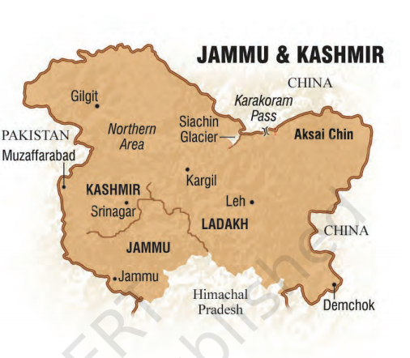
- Overview
- Jammu and Kashmir (J&K) has witnessed prolonged violence, leading to the loss of lives and displacement of families.
- The 'Kashmir issue' is often seen as a major point of contention between India and Pakistan, but the political landscape of the State has multiple dimensions.
- Jammu and Kashmir comprises three distinct social and political regions:
- Kashmir Valley: Predominantly Kashmiri-speaking Muslims with a small Kashmiri-speaking Hindu minority.
- Jammu Region: A mix of foothills and plains inhabited by Hindus, Muslims, and Sikhs, speaking various languages.
- Ladakh Region: A sparsely populated, mountainous region, equally divided between Buddhists and Muslims.
- The 'Kashmir issue' extends beyond a bilateral dispute, involving aspects of Kashmiri identity (Kashmiriyat) and the aspirations of its people for political autonomy.
- Roots of the Problem
- Pre-1947 Situation
- Before 1947, Jammu and Kashmir was a princely state under the rule of Maharaja Hari Singh. The ruler:
- Sought to maintain an independent status for the State.
- Was pressured by Pakistan, which claimed Kashmir due to its Muslim-majority population.
- Faced a popular movement led by Sheikh Abdullah and the National Conference, which opposed the Maharaja but did not support merging with Pakistan.
- Accession to India
- In October 1947, Pakistan sent tribal infiltrators to capture Kashmir.
- The Maharaja sought military aid from India and signed the Instrument of Accession.
- India repelled the infiltrators, securing Kashmir Valley.
- Sheikh Abdullah became the Prime Minister of J&K in March 1948.
- India assured J&K of autonomy.
- External and Internal Disputes
- External Dispute with Pakistan
- Since 1947, Pakistan has claimed Kashmir as part of its territory.
- Pakistan-sponsored tribal invasion in 1947 resulted in part of J&K being under Pakistani control.
- India considers this area under illegal occupation, while Pakistan calls it 'Azad Kashmir'.
- The Kashmir conflict remains a major issue between the two nations.
- Internal Disputes within India
- J&K's special status under Article 370 has led to conflicting viewpoints:
- One viewpoint:
- Article 370 prevents full integration of J&K with India and should be revoked.
- Another viewpoint:
- Article 370's autonomy provisions have been eroded over time, leading to demands for:
- Plebiscite: Promise of a public vote post-accession was never fulfilled.
- Greater State Autonomy: Special status has been weakened.
- Democratic Deficit: Kashmir has not experienced democracy as practiced in the rest of India.
- Politics Since 1948
- Sheikh Abdullah's Leadership
- Implemented land reforms and policies benefiting common people.
- Grew distant from the Central Government over Kashmir's status.
- Dismissed in 1953 and detained for years.
- Leadership post-1953 was propped up by the Centre but lacked mass support.
1974 Agreement: Indira Gandhi reached an accord with Sheikh Abdullah.
- Sheikh revived the National Conference and won 1977 elections.
- After Sheikh's death in 1982, his son Farooq Abdullah took over.
- Political Turmoil
- Farooq Abdullah's government was dismissed, generating resentment.
- The National Conference allied with the Congress (1986), reinforcing the belief that the Centre was interfering in J&K politics.
- Insurgency and Aftermath
1987 Election and Rise of Militancy
1987 Elections: National Conference-Congress alliance won, but results were widely considered rigged.
- Resentment against inefficiency and perceived manipulation of democracy fueled militant insurgency.
- By 1989, Kashmir witnessed a militant movement for separate Kashmiri identity.
- Insurgents received support from Pakistan.
- Period of Violence (1990s)
- J&K came under President's rule.
- Army action increased to combat militancy.
1996 Elections: National Conference won, led by Farooq Abdullah, demanding regional autonomy.
2002 Elections: Marked by fairness; PDP-Congress coalition formed the government.
- Separatism and Beyond
- Different Separatist Groups
- Separatist politics took different forms:
- Groups demanding a separate Kashmiri nation.
- Groups wanting Kashmir to merge with Pakistan.
- Groups advocating for greater autonomy within India.
- Autonomy Demands from Jammu and Ladakh
- Both Jammu and Ladakh regions feel neglected and demand intra-state autonomy.
- The demand for State autonomy coexists with regional grievances within J&K.
- Shift Towards Peace
- Popular support for militancy declined over time.
- The Central Government engaged in talks with separatist groups.
- Additional side information
- Dravidian Movement
- One of India's first regional movements.
- Advocated for southern pride against northern political and economic dominance.
- Led to the formation of Dravidar Kazhagam (DK) by E.V. Ramasami 'Periyar'.
- Split into Dravida Munnetra Kazhagam (DMK), which:
- Opposed North Indian economic dominance.
- Fought for Tamil culture in education.
- Opposed Hindi as the official language.
1967: DMK came to power in Tamil Nadu; Dravidian parties have dominated ever since.
- Key Personalities
- E.V. Ramasami Naicker (Periyar) (1879-1973)
- Social reformer, atheist, anti-caste activist.
- Led the Self-Respect Movement (1925) and anti-Brahmin struggles.
- Founded Dravidar Kazhagam.
- Opposed Hindi imposition and northern dominance.
- Sheikh Mohammad Abdullah (1905-1982)
- Leader of J&K, proponent of autonomy and secularism.
- Opposed Pakistan due to its non-secular character.
- Leader of National Conference.
- Became PM of J&K (1947), later dismissed and jailed (1953-1964, 1965-1968).
- Became CM in 1974 after an agreement with Indira Gandhi.
- Punjab
- Social Composition and Political Reorganization
- 1980s saw major developments in Punjab.
- After Partition and the creation of Haryana and Himachal Pradesh, the state's social composition changed.
- Punjab became a Punjabi-speaking state in 1966 after waiting since the 1950s.
- Akali Dal, formed in 1920, led the movement for the 'Punjabi suba.'
- Sikhs became a majority in the truncated state of Punjab.
- Political Context
- Akali Dal's Struggles:
- Akali Dal came to power in 1967 and 1977 through coalition governments.
- Political position remained precarious due to:
- Mid-term dismissal by the Centre.
- Lack of strong Hindu support.
- Internal divisions within the Sikh community.
- Rise of Autonomy Demands:
- In the 1970s, Akali leaders demanded political autonomy.
- 1973 Anandpur Sahib Resolution called for regional autonomy and redefined center-state relationships.
- Aimed at asserting Sikh aspirations and bolbala (dominance), potentially for a separate Sikh nation.
- Cycle of Violence
- Shift to Extremism:
- After 1980, Akali Dal launched movements on water distribution and Sikh identity.
- Extremists advocated for Khalistan and escalated the situation into armed insurgency.
- Operation Blue Star (1984):
- Militants took refuge in the Golden Temple.
- Operation Blue Star successfully removed militants but damaged the temple and hurt Sikh sentiments.
- Indira Gandhi's Assassination:
- Indira Gandhi was assassinated on October 31, 1984, by Sikh bodyguards.
- Anti-Sikh violence broke out, leading to over 2000 deaths in Delhi and hundreds in other areas.
- The government's slow response fueled anger in the Sikh community.
- Additional side information:
- “Systematic attacks on Sikhs occurred, with assurance of safety for perpetrators.” — Justice Nanavati Commission, 2005.
- Road to Peace
- Rajiv Gandhi-Longowal Accord (1985):
- Rajiv Gandhi initiated dialogue and reached an agreement with Akali Dal's Harchand Singh Longowal.
- Key provisions:
- Chandigarh's transfer to Punjab.
- A commission to resolve Punjab-Haryana border disputes.
- A tribunal for Ravi-Beas river water sharing.
- Compensation for those affected by militancy.
- Continued Violence and Challenges:
- Violence continued for a decade, and police excesses violated human rights.
- 1992 elections had a low voter turnout (24%).
- End of Militancy:
- Security forces eradicated militancy, restoring peace by the mid-1990s.
- In 1997, Akali Dal (Badal) and BJP won the first normal elections post-militancy.
- Focus shifted to economic development and social change.
- Additional side information:
- Master Tara Singh (1885-1967): A prominent leader in the Akali movement and supporter of the Punjab State.
- Sant Harchand Singh Longowal (1932-1985): Key negotiator of the Rajiv Gandhi-Longowal Accord, assassinated by Sikh youth.
- The North-East
- 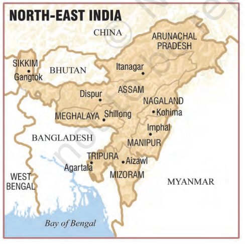
- Overview:
- The region consists of seven states, known as the 'seven sisters'.
- The region has only 4% of the country's population but occupies twice as much area.
- A 22-kilometer corridor connects the region to the rest of the country, while it shares boundaries with China, Myanmar, and Bangladesh.
- It serves as India's gateway to South East Asia.
- Since 1947, Tripura, Manipur, and Khasi Hills of Meghalaya merged with India after Independence.
- The region has undergone political changes: Nagaland (1963), Manipur, Tripura, and Meghalaya (1972), Mizoram, and Arunachal Pradesh (1987).
- Partition in 1947 left the North-East landlocked, affecting its economy and development.
- The region suffered neglect and its politics remained insulated due to isolation and weak communication.
- Demographic changes occurred due to migration from neighboring states and countries.
- Challenges in the Region:
- Isolation, complex social composition, and backwardness led to varied demands.
- Weak communication and international borders further complicated politics.
- Key Issues:
- Autonomy demands
- Secessionist movements
- Opposition to 'outsiders'
- Demands for Autonomy
- Historical Context:
- At independence, the region, except Manipur and Tripura, was part of Assam.
- Non-Assamese communities felt the Assam government imposed Assamese language on them, leading to opposition and riots.
- Tribal leaders demanded separation from Assam, forming the Eastern India Tribal Union, which later became the All Party Hill Leaders Conference (1960).
- The demand was for a tribal state carved out of Assam.
- Instead of one state, multiple states (Meghalaya, Mizoram, Arunachal Pradesh) were created from Assam.
- Tripura and Manipur were also upgraded to states.
- Ongoing Demands:
- In Assam, Bodos, Karbis, and Dimasas sought separate states.
- These demands were addressed through public opinion, movements, and insurgency.
- Smaller states were not feasible, so autonomy was granted through district councils and autonomous councils.
- Karbis and Dimasas received autonomy under district councils, and Bodos received an Autonomous Council.
- Secessionist Movements
- Challenges of Secession:
- Secession demands were harder to address, as they called for a separate country rather than just autonomy.
- The Mizo Hills area was made an autonomous district within Assam post-independence.
- Some Mizos believed they were never part of British India, leading to the Mizo National Front (MNF) formation.
- In 1966, the MNF started an armed campaign for independence, supported by Pakistan and given shelter in East Pakistan.
- The Indian government countered the insurgency with repressive measures, including the use of air force.
- The insurgency lasted for two decades, with both sides suffering losses.
- Negotiations, led by Rajiv Gandhi and Mizo leader Laldenga, concluded in 1986 with a peace agreement.
- Mizoram was granted full statehood with special powers, and the MNF gave up its secessionist struggle.
- Laldenga became the Chief Minister, and Mizoram became peaceful with significant development.
- Nagaland's Story:
- Nagaland's struggle began earlier than Mizoram's, with Angami Zapu Phizo leading the Naga National Council.
- In 1951, Nagas declared independence from India.
- After violent insurgency, some Nagas signed agreements with India, but others rejected them.
- The Naga issue remains unresolved to this day.
- Movements Against Outsiders
- Migration Issues:
- Large-scale migration into the North-East created tensions between 'local' communities and 'outsiders' (migrants).
- Outsiders were seen as encroaching on land and competing for employment and political power.
- These issues led to political and sometimes violent movements in many states.
- Assam Movement (1979-1985):
- Assamese people suspected the presence of illegal Bengali Muslim settlers from Bangladesh.
- They feared that these settlers would reduce indigenous Assamese to a minority.
- Economic issues, like poverty and unemployment, were also factors.
- In 1979, the All Assam Students' Union (AASU) led an anti-foreigner movement.
- The movement sought to deport foreigners who entered Assam after 1951.
- After six years of turmoil, the Rajiv Gandhi-led government negotiated an accord in 1985.
- The accord resulted in the identification and deportation of illegal immigrants.
- The AASU formed a regional political party, Asom Gana Parishad (AGP), which came to power in 1985.
- The Assam Accord brought peace but did not resolve immigration issues, which continue to affect Assam and other parts of the North-East.
- Other Issues:
- In Tripura, the original inhabitants became a minority, leading to tensions with migrants.
- Similar issues are observed with Chakma refugees in Mizoram and Arunachal Pradesh.
- Additional side information
- Sikkim's Merger:
- At Independence, Sikkim was a 'protectorate' of India, not fully sovereign.
- The Chogyal, Sikkim's monarch, had internal control but India handled defense and foreign relations.
- The Chogyal faced difficulty in dealing with the democratic aspirations of the people, as most of the population was Nepali, while the elite was from the Lepcha-Bhutia community.
- Anti-Chogyal leaders sought support from the Government of India, leading to the Sikkim Congress's victory in 1974 elections.
- The Sikkim Assembly passed a resolution for full integration with India, which was followed by a referendum in 1975.
- Sikkim became the 22nd state of India, but the Chogyal opposed this merger.
- Despite opposition, the merger was popular and did not divide Sikkim's politics.
- Key Figures:
- Kazi Lhendup Dorji Khangsarpa (1904): Leader of the democracy movement in Sikkim, founder of Sikkim Praja Mandal, and leader of the movement for Sikkim's integration with India.
- Angami Zapu Phizo (1904-1990): Leader of Nagaland's movement for independence and president of the Naga National Council. He led an armed struggle and spent decades in exile, first in Pakistan and later in the UK.
- Goa's Liberation and Political Evolution
- Goa's Colonial History and Liberation
- Goa, Diu, and Daman remained under Portuguese colonial rule until 1961.
- The Portuguese suppressed the Goan people and carried out forced religious conversions.
- After India's independence, Goa's liberation was pursued diplomatically, but it took military action in December 1961.
- Post-Liberation Political Challenges
- After liberation, the Maharashtrawadi Gomanatak Party (MGP) wanted Goa to merge with Maharashtra.
- Many Goans, led by the United Goan Party (UGP), wanted to preserve Goa's separate identity, especially its Konkani culture.
- In 1967, an opinion poll was held, and the majority voted to remain separate from Maharashtra.
- Goa remained a Union Territory until 1987, when it became a state.
- Accommodation and National Integration
- Introduction to Regional Aspirations and National Integration
- Even after six decades of independence, issues of national integration remain unresolved.
- Regional demands for statehood, economic development, autonomy, and separation continue.
- Since the 1980s, these tensions have tested the capacity of democratic politics in India.
- Lesson 1: Regional Aspirations in Democratic Politics
- Regional aspirations are a normal part of democratic politics.
- Not unique to India – other countries like the UK, Spain, and Sri Lanka also deal with regional issues.
- Nation-building is an ongoing process in a large and diverse democracy like India.
- Lesson 2: Responding Through Democratic Negotiations
- Best response to regional aspirations is democratic negotiations, not suppression.
- Example: In the 1980s, regions like Punjab, Assam, Kashmir, and the North-East faced unrest.
- Government of India reached negotiated settlements, which helped reduce tensions (e.g., Mizoram).
- Additional side information
- Rajiv Gandhi (1944-1991)
- Prime Minister of India (1984-1989), played a key role in reaching agreements with militants.
- Advocated for a more open economy and technology.
- Assassinated by an LTTE suicide bomber.
- Lesson 3: Significance of Power Sharing
- Formal democratic structures are not enough; regions must have a share in power at both state and national levels.
- Regions must participate in national decision-making to prevent alienation and feelings of injustice.
- Lesson 4: Economic Disparities and Regional Discrimination
- Regional economic imbalances contribute to feelings of discrimination.
- Backward regions demand priority for development to address this imbalance.
- Development disparities lead to inter-regional migrations.
- Lesson 5: India's Flexible Constitutional Framework
- The Indian Constitution is flexible and accommodative, allowing special provisions for regions like J&K and the North-East.
- The Sixth Schedule allows tribal autonomy in the North-East.
- This flexibility has been crucial in resolving political problems in these regions.
- Conclusion: India's Constitutional Strength
- India's flexible constitutional framework distinguishes it from countries with similar challenges.
- Regional aspirations are not encouraged to promote separatism.
- India's political system successfully accommodates regionalism as part of democratic politics.
- Recent developments in indian politics
- Political Developments in the 1980s and 1990s
- Rajiv Gandhi's Rise to Power
- After the assassination of Indira Gandhi, Rajiv Gandhi became the Prime Minister.
- He led the Congress to a massive victory in the 1984 Lok Sabha elections.
- Key Political Developments by the End of the 1980s
- Defeat of the Congress Party in 1989
- The Congress, which had won 415 seats in 1984, was reduced to only 197 seats in 1989.
- The 1989 elections marked the end of the “Congress system,” although the Congress continued to play a central role in Indian politics.
- The Congress system lost its centrality, signaling a shift in the party system.
- Rise of the 'Mandal Issue' (1990)
- The National Front government implemented the Mandal Commission's recommendation for OBC reservations in central government jobs.
- This sparked violent protests known as the 'anti-Mandal' protests across the country.
- The dispute over OBC reservations became a major issue in shaping national politics from 1989 onward.
- Introduction of Economic Reforms (1991)
- Rajiv Gandhi initiated a shift in economic policy, known as the structural adjustment program.
- The economic reforms, implemented in 1991, radically changed India's economic direction, which had previously focused on state-led development.
- While widely criticized by various movements and organizations, successive governments continued to follow these reforms.
- Demolition of Babri Masjid (1992)
- The demolition of the disputed Babri Masjid in Ayodhya became a turning point in Indian politics.
- It intensified debates over Indian nationalism and secularism.
- This event was closely linked to the rise of the BJP and the politics of 'Hindutva'.
- Assassination of Rajiv Gandhi (1991)
- Rajiv Gandhi was assassinated by a Sri Lankan Tamil linked to the LTTE during an election campaign in Tamil Nadu.
- Despite his death, the Congress emerged as the single largest party in the 1991 elections.
- Following Rajiv Gandhi's assassination, the Congress party chose Narsimha Rao as the new Prime Minister.
- Era of Coalitions in Indian Politics
- 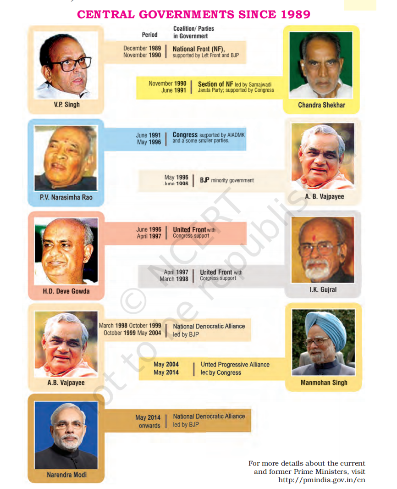
- Defeat of Congress and the Emergence of Coalition Politics (1989)
- The 1989 elections led to the defeat of Congress but did not result in a majority for any other party.
- Congress, although the largest party, lacked a clear majority and chose to sit in the opposition.
- The National Front, an alliance of Janata Dal and regional parties, formed a coalition government with support from both the BJP and the Left Front, although neither the BJP nor the Left Front joined the government.
- Decline of Congress Dominance
- The defeat marked the end of Congress's dominance in the Indian party system.
- In the 1960s, Congress under Indira Gandhi re-established its dominance. However, by the 1990s, this dominance faced another challenge.
- The 1990s did not see the emergence of a single party to replace Congress, leading to the rise of a multi-party system.
- The Era of Multi-Party System
- Post-1989, no single party secured a clear majority in any Lok Sabha election until 2014.
- This era saw the rise of coalition governments at the Centre, with regional parties playing a crucial role in forming alliances.
- Alliance Politics and Regional Influence
- Rise of Dalit and OBC Movements
- The 1990s saw the emergence of powerful parties representing Dalit and backward castes (OBCs), many of which also emphasized regional assertion.
- These parties played a significant role in the United Front government that came to power in 1996.
- The United Front Government (1996)
- The United Front was similar to the National Front of 1989, including Janata Dal and several regional parties.
- Unlike in 1989, the BJP did not support this government, and it was supported by the Congress instead.
- Political instability was evident, as the Left supported a non-Congress government, while Congress supported the Left, both wanting to keep the BJP out of power.
- BJP's Rise and Coalition Governments
- The BJP gained ground in the 1991 and 1996 elections and emerged as the largest party in the 1996 elections.
- However, it failed to secure a majority and struggled to form a stable government.
- The BJP eventually formed a coalition government in May 1998, led by Atal Bihari Vajpayee, which completed its term until 1999.
- The BJP was re-elected in October 1999, continuing the coalition government under Vajpayee's leadership.
- The Shift to Coalition Governments
- Coalition Governments from 1989 to 2014
- From 1989 to 2014, India witnessed eleven governments at the Centre, all either coalition governments or minority governments with external support.
- Key coalitions included the National Front (1989), the United Front (1996–97), the NDA (1997), the BJP-led coalition (1998–99), and the UPA (2004–09).
- Regional parties played a critical role in these coalitions, and coalition politics became a norm.
- Long-Term Trend of Coalition Politics
- The shift towards coalition politics was a long-term trend, building on changes that occurred over several decades.
- In earlier times, the Congress party itself represented a “coalition” of different interests and social groups, forming the “Congress system.”
- By the late 1960s, various sections began leaving the Congress to form separate political parties.
- The rise of regional parties after 1977 weakened Congress but did not lead to any single party replacing it.
- Political Rise of Other Backward Classes (OBCs)
• Emergence of OBCs as a Political Force
- OBCs: Communities other than SC and ST facing educational and social backwardness.
- Termed 'backward castes' in some contexts.
- Decline in Congress support among OBCs created space for non-Congress parties.
- First political expression of this shift: Janata Party government in 1977.
- Janata Party had support from rural OBC sections, including Bharatiya Kranti Dal and Samyukta Socialist Party.
• The Role of Janata Dal and Mandal Commission in OBC Politics
- Janata Dal combined political groups with strong OBC support in the 1980s.
- National Front government decided to implement Mandal Commission's recommendations.
- National debate on reservations for OBCs raised political awareness.
- Emergence of new political parties advocating better opportunities for OBCs in education, employment, and political power.
- The Mandal Commission and Its Impact
• Background and Formation of the Mandal Commission
- Reservations for OBCs existed in southern states since the 1960s but not in the north.
- Janata Party government (1977-79) raised demand for reservations for backward castes.
- Karpoori Thakur, Bihar CM, introduced OBC reservation policy in Bihar.
- In 1978, central government appointed the Second Backward Classes Commission.
• Mandal Commission's Findings and Recommendations
- Mandal Commission identified 'backward castes' as OBCs.
- OBCs had low presence in educational institutions and government jobs.
- Commission recommended 27% reservations for OBCs in education and jobs.
- Suggested land reforms and other measures for OBC welfare.
• Implementation of Mandal Recommendations
- In August 1990, the National Front government decided to implement OBC reservations.
- This sparked protests and was challenged in the Supreme Court.
- Supreme Court upheld the decision in November 1992, ensuring broad political support for OBC reservations.
• B.P. Mandal (1918-1982)
- Former M.P. from Bihar and Chairperson of the Mandal Commission.
- Advocate for OBC reservations, a socialist leader.
- Briefly served as Bihar's Chief Minister in 1968.
- Joined the Janata Party in 1977.
- Political Fallouts and the Rise of Dalit Politics
• Dalit Politics and the Formation of BSP
- 1980s saw rise of Dalit political organizations, starting with BAMCEF in 1978.
- BAMCEF later led to the formation of Dalit Shoshit Samaj Sangharsh Samiti and BSP under Kanshi Ram.
- BSP began as a small party but achieved significant success in Uttar Pradesh elections (1989, 1991).
- BSP, under Kanshi Ram, became a major political force, advocating for Dalit empowerment.
• Kanshi Ram's Leadership and BSP's Growth
- Kanshi Ram (1934-2006) founded BAMCEF, DS-4, and BSP.
- Left central government job to focus on Dalit and Bahujan politics.
- Believed political power was essential for social equality.
- BSP became a key player in north Indian states, expanding beyond Dalit support.
• Dalit and OBC Politics: A Complex Relationship
- Dalit and OBC politics developed independently, sometimes in competition.
- Both movements aimed to address social and political inequalities but often clashed in their goals.
- Communalism, Secularism, Democracy
• Rise of Politics Based on Religious Identity
- After the Emergency, Bharatiya Jana Sangh merged into Janata Party.
- Post-JP breakup, former Jana Sangh members formed BJP in 1980.
- Initially, BJP embraced a broader political platform, including 'Gandhian Socialism.'
- BJP had limited success in 1980 and 1984 elections.
- After 1986, BJP shifted focus to Hindu nationalism, emphasizing 'Hindutva.'
• Hindutva Ideology
- Hindutva, meaning 'Hinduness,' was defined by V.D. Savarkar as the basis of Indian nationhood.
- It argues that to be part of India, one must accept India as both 'fatherland' (pitrubhu) and 'holy land' (punyabhu).
- Hindutva advocates believe a strong nation requires a unified national culture, which they claim Hindu culture alone can provide.
- Two Key Developments in BJP's Hindutva Politics
1. Shah Bano Case (1985)
- 62-year-old Muslim woman sought maintenance after divorce, Supreme Court ruled in her favor.
- Orthodox Muslims saw the ruling as interference with Muslim Personal Law.
- Government passed the Muslim Women (Protection of Rights on Divorce) Act (1986), nullifying the ruling.
- BJP criticized this as appeasement of the minority community.
2. Ayodhya Dispute
- Background: The Babri Masjid, a 16th-century mosque in Ayodhya, built by Mir Baqi, is believed by some Hindus to have been constructed after demolishing a temple at Lord Rama's birthplace.
- The dispute, ongoing for decades, became central after the Faizabad district court's 1986 order to unlock the Babri Masjid for Hindu prayers.
- This ignited communal tensions, with BJP leading the charge, backed by RSS and VHP, with a series of mobilizations.
- BJP's 'Rathyatra' from Somnath to Ayodhya further fueled public support.
- Demolition of the Babri Masjid and Its Aftermath
• Demolition of the Babri Masjid (1992)
- In December 1992, Karseva (voluntary service) for building a Ram temple escalated tensions.
- Despite Supreme Court orders to protect the disputed site, the mosque was demolished on December 6, 1992.
- The demolition sparked violence across the country, including riots in Mumbai in January 1993.
• Political Consequences
- BJP-led state governments were dismissed by the Centre.
- The Chief Minister of Uttar Pradesh faced contempt of court charges.
- BJP expressed regret over the demolition but continued to support the Ayodhya issue.
- A commission was formed to investigate the demolition.
- The event sparked a debate on secularism, with questions about India's commitment to equal rights for all citizens, regardless of religion.
- Debate Over Secularism and Electoral Use of Religion
• Secularism Debate
- The demolition reignited questions about India's secular fabric: Will the majority religious community dominate, or will all communities receive equal protection?
- The use of religious sentiments for political purposes posed a significant threat to India's democracy.
- Similar issues were highlighted in the 1984 anti-Sikh riots and the 2002 Gujarat riots.
- Gujarat Riots (2002)
• Cause of Violence
- The immediate provocation was the Godhra train incident where 57 Karsevaks were killed in a fire.
- Violence against Muslims erupted in Gujarat, lasting nearly a month, with over 1,100 fatalities, mostly Muslims.
• Government Response and Criticism
- Gujarat government's failure to control violence and provide relief was criticized by the National Human Rights Commission.
- The Election Commission postponed assembly elections in Gujarat due to the situation.
• Impact on Democratic Politics
- The Gujarat riots, like the 1984 anti-Sikh riots, showed the susceptibility of governmental machinery to sectarian passions.
- Such instances highlight the dangers of using religious sentiments for political gain, threatening democratic integrity.
- Additional side information
- Legal and Political Consequences
• Supreme Court Observations on the Ayodhya Incident
- The demolition of the Babri Masjid damaged India's image internationally, leading to the loss of innocent lives and property.
- The Chief Minister of Uttar Pradesh was convicted of contempt of court for failing to protect the disputed structure.
• Judicial Action Against Political Leaders
- The court emphasized that such actions posed a threat to India's secular fabric and convicted political leaders involved.
- Emergence of a New Consensus
- 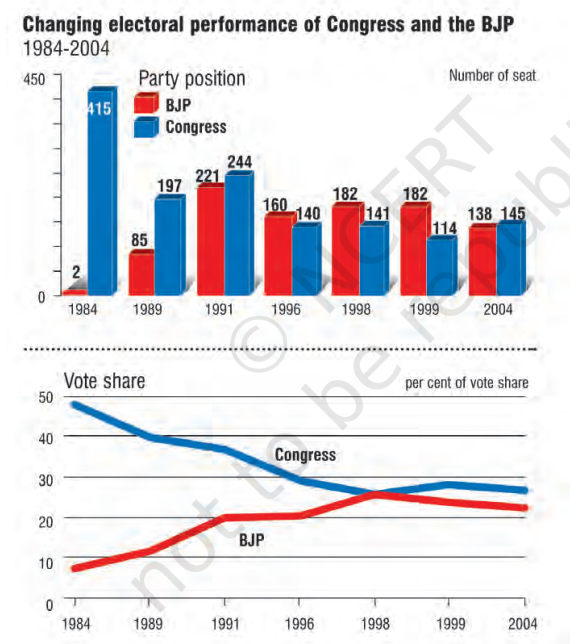
- Post-1989: Decline of caste-based politics, Congress, and rise of BJP.
- Comparison of electoral performances of Congress and BJP helps understand the period's political competition.
- Electoral Competition
- BJP and Congress engaged in tough competition. Compare their electoral fortunes to 1984 elections.
- Since 1989, Congress and BJP votes and seats don't add up to more than 50%. Where did the remaining votes and seats go?
- Parties today not part of Congress or Janata families?
- In the nineties, competition was between BJP and Congress-led coalitions. Which parties were not part of either coalition?
- Lok Sabha Elections 2004
- Congress entered coalitions significantly. UPA came to power after defeating NDA.
- Congress revived, increasing its seats for the first time since 1991.
- 2004 election showed a small difference between votes of Congress & allies and BJP & allies.
- Post-1990s Political Landscape
- Four main party groups emerged:
1. Congress-led coalition
2. BJP-led coalition
3. Left Front parties
4. Parties not part of any coalition
- Suggests multi-cornered political competition and ideological divergence.
- Growing Consensus
- Despite competition, consensus emerged on key issues.
- Four Elements of Consensus
1. Economic Policies: Most parties support new economic policies, believing they'll lead to prosperity and global economic power.
2. Backward Castes: Political parties support reservations for backward classes in education, employment, and adequate power representation.
3. State-Level Parties: Less distinction between state-level and national-level parties. State-level parties play a central role in national governance.
4. Pragmatic Considerations: Focus shifted from ideological differences to power-sharing. Coalition politics, even without ideological agreement (e.g., NDA parties and BJP's Hindutva).
- These changes will shape India's political future.
- As political parties act within this consensus, movements advocate for new forms of development, focusing on issues like poverty, displacement, and social security.